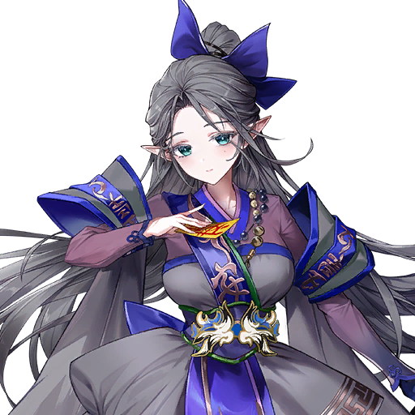

Act 5 đưa Evan đến Shinji, quê hương của Teo, để rèn luyện kiếm thuật dưới sự chỉ dạy của sư phụ, trong lúc Feng Yan cũng tìm đến xin học kiếm đạo. Xen kẽ với hành trình tu luyện ấy là câu chuyện của hai chị em song sinh Sunran và Hayeon: sáu mươi năm trước, Hayeon đã lao mình vào khe nứt để phong ấn nó từ bên trong, rồi bị mắc kẹt trong Vực Thẳm, nơi nàng buộc phải lập khế ước với Đại Ác Ma Judas để có cơ hội trở về. Nhiều năm sau, Hayeon trở lại mặt đất trong hình hài một vị sư lang thang bí ẩn, trong khi Sunran đã trở thành Lãnh Chúa Hộ Vệ của tộc. Khi hai chị em cuối cùng cũng đối mặt nhau, những hiểu lầm chất chồng và sự thao túng của Dongyoung đẩy họ vào xung đột — và chỉ sức mạnh của tình chị em mới có thể hóa giải tất cả.

Tập 29 — Người canh giữ Vết Nứt
Tập 30 — Nữ tư tế lang thang
TẬP 29 — NGƯỜI CANH GIỮ VẾT NỨT
CHƯƠNG 1
Quê hương của Teo
Teo's Hometown
TÓM TẮT
Evan đến Shinji, quê hương của Teo — nơi sư phụ từng rèn luyện kiếm thuật — để trải qua quá trình huấn luyện khắc nghiệt hơn.
NHÂN VẬT
Shinji — vùng đất nơi Teo được sinh ra và trưởng thành. Tại đây, truyền thuyết về đại ác ma từng đẩy thế giới đến bờ vực diệt vong và sự hy sinh của các Dạ Tinh Linh đã đánh bại hắn vẫn được truyền tụng từ đời này sang đời khác.
Teo: Evan, con đã theo kịp ta khá tốt rồi đấy.
Evan: Cảm ơn sư phụ!
Teo: Giờ thì, trước khi bước sang giai đoạn tiếp theo, ta phải chắc chắn về quyết tâm của con.
Evan: Sư phụ, con đã sẵn sàng đối mặt với bất kỳ thử thách hay gian khổ nào, dù có khó khăn đến đâu.
Teo: Ừm.
Teo: Những gì ta dạy con cho đến nay không phải là kiếm thuật của tộc ta. Trong tất cả các kỹ thuật ta biết, ta chỉ dạy con những chiêu thức phù hợp nhất với con.
Evan: ...Vâng, con biết. Con cứ tưởng là do trình độ của con chưa đủ.
Teo: Kiếm thuật của tộc ta không phải thứ có thể truyền lại một cách dễ dàng. Khoảnh khắc con được truyền thụ nó, gánh nặng trách nhiệm của nó cũng sẽ đè lên vai con.
Evan: Ý sư phụ là sao...?
Teo: Kiếm thuật của ta — không, kiếm thuật của tộc ta — không được tạo ra để chống lại con người.
Evan: ...
Teo: Những kỹ thuật này được tạo ra để chiến đấu và săn lùng những thực thể to lớn, mạnh mẽ và đáng sợ hơn con người rất nhiều — những ác ma khổng lồ và ma thú hung tợn.
Evan: Tộc của... sư phụ...?
Teo: Evan, con đã bao giờ nghe đến nơi gọi là Shinji chưa?
Evan: Con có nghe đồn... Người ta nói đó là vùng đất của các tinh linh canh giữ một đại ác quỷ ở rìa phía đông...
Teo: Đúng vậy. Vùng đất ấy chính là nơi ta sinh ra, lớn lên và rèn luyện — và cũng là nơi ta có được thanh kiếm này...
Teo: Hắc Kiếm.
TẬP 29 — NGƯỜI CANH GIỮ VẾT NỨT
CHƯƠNG 2
Quái vật ở Rừng Whitecrest
The Monsters of Whitecrest Woods
TÓM TẮT
Khi khe nứt vốn bị Cổng Quỷ kìm giữ bắt đầu rung chuyển, vô số quái vật đột nhiên tràn ra và kéo về phía Rừng Whitecrest.
NHÂN VẬT
Sau khi Karin bị bắt cóc, các Hắc Nguyệt bắt đầu mở ra khắp Gaia. Trước nỗi đau của nàng, khe nứt — vốn chỉ được Cổng Quỷ kìm giữ một cách mong manh — bắt đầu rung chuyển đầy bất an trong lòng đất Shinji.
Cheonbong: Quan trấn thủ! Quan trấn thủ! Có chuyện lớn rồi!
Gibum: Hừm, đồ ngốc! Ngươi không biết kiềm chế cảm xúc trước mặt chủ nhân sao? Thật mất mặt!
Cheonbong: Hả? Tôi, ờ, nhưng mà... lũ quái vật lại xâm nhập rồi...!
Hongrae: Cái gì?! Sao ngươi không nói sớm?!
Gibum: Quan trấn thủ! Quan trấn thủ, khẩn cấp lắm rồi!
Yoongun: Trời đất ơi, bình tĩnh lại đã rồi hãy nói. Giờ thì, nói ta nghe xem có chuyện gì.
Cheonbong: Chuyện là...! Tôi, ối...! Quái vật! Quái vật lại xâm nhập nữa rồi, thưa ngài!
Yoongun: Đáng lo thật...! Chuyện này xảy ra quá thường xuyên rồi. Chúng đã tấn công không biết bao nhiêu lần chỉ trong vòng một tháng...!
Hongrae: Nhưng thưa quan trấn thủ... hay là chúng ta khoan vội xông ra đánh lũ quái vật mà chờ Đại Thần đến trước? Ngài vẫn chưa hoàn toàn hồi phục sau vết thương lần trước mà.
Yoongun: Không, chúng ta sẽ đánh đuổi chúng trước khi Đại Thần đến! Dù sao thì ta cũng là quan trấn thủ ở đây!
Yoongun: Dù rằng... vì Đại Thần đang đóng quân ở đây, nên có lẽ ta cũng chỉ là quan trấn thủ trên danh nghĩa mà thôi.
Hongrae: Nói mới nhớ, rốt cuộc nơi này là chỗ nào vậy? Toàn những chuyện kỳ lạ về khe nứt, rồi quái vật lạ cứ đổ về mỗi ngày...
Cheonbong: Chúng ta đã làm gì mà bị điều đến một nơi như thế này chứ? Ngài có đắc tội với vị quan lớn nào không, quan trấn thủ?
Yoongun: Tất nhiên là không! Ngoại trừ việc đốt cháy điện thờ tổ tiên của đám ngoại thích hoàng gia phiền phức kia thôi! Chúng tưởng mình muốn làm gì thì làm vì bệ hạ còn quá trẻ!
Hongrae: Hừ... Tôi nghĩ chúng ta đã qua điểm không thể quay đầu từ lâu trước đó rồi...
Yoongun: Không hề! Bệ hạ rõ ràng đã lường trước tình hình này và cử chúng ta đến đây vì chúng ta là những bề tôi trung thành và đáng tin cậy nhất của ngài.
Gibum: Kể từ sau đại chiến ở Aisha, cả thế giới đầy rẫy quái vật. Nhưng rốt cuộc chúng từ đâu mà ra?
Yoongun: Chắc chắn bệ hạ tin rằng nơi này ẩn chứa bí mật đằng sau việc những con quái vật bí ẩn này cứ liên tục xuất hiện. Dù sao thì khe nứt cũng ở đây mà.
Gibum: Ồ, ngài nghĩ vậy sao? Ừ thì, bệ hạ rất anh minh, nên...
Cheonbong: Gừ... Nếu Aisha là nguyên nhân của tất cả chuyện này, chẳng phải người Aisha nên chịu trách nhiệm sao? Tại sao chúng ta phải chịu khổ vì cuộc chiến của Aisha?
Yoongun: Vì chẳng có bằng chứng gì cả, rõ ràng thế còn gì.
Yoongun: Và tìm ra bằng chứng đó cũng là một phần nhiệm vụ của ta. Biết đâu chúng ta sẽ tìm được bằng chứng liên kết lũ quái vật với Aisha trong lúc điều tra khe nứt ở đây.
Yoongun: Hoặc là...
Gibum: Hoặc là sao?
Yoongun: Khe nứt được các Dạ Tinh Linh canh giữ... Biết đâu đó chính là nơi lũ quái vật chui ra.
Yoongun: Dù sao thì, nói vậy đủ rồi. Dù hoàn cảnh đưa chúng ta đến đây là gì, cũng không thay đổi được sự thật là ta được phái đến vùng đất này với tư cách chính thức.
Yoongun: Nếu ta muốn lấy được lòng tin của người dân nơi đây, ta phải lập được những chiến công ngang tầm với các Dạ Tinh Linh.
Yoongun: Đến lúc đi săn quái vật rồi!
Hongrae: Ồ! Rõ rồi ạ!
Trong khi đó, tại Đỉnh Hiền Nhân...
Feng Yan: Ừm... Teo chắc chắn đã xoay lưỡi kiếm như thế này ở đoạn này... rồi chém vào sườn Kyle...
Soi: Feng Yan...!
Feng Yan: Hừ... Ta vẫn không tài nào hiểu nổi. Làm sao hắn phân bổ sức mạnh như vậy? Và tại sao hắn lại lùi nửa bước vào lúc đó...?
Feng Yan: Chắc chắn phải có lý do...
Feng Yan: Ta từng tự hào rằng mình đã ngộ đạo qua kiếm... Thế mà giờ đây, ta gần như xấu hổ khi tự gọi mình là Kiếm Thánh.
Soi: ...Feng Yan?
Feng Yan: Giá như ta có thể học hỏi thêm... về kiếm thuật của người đàn ông ấy...
Soi: Bụp!
Feng Yan: Hự!
Soi: Ngươi đang nghĩ ngợi gì mà trầm tư thế? Ta gọi tên ngươi ngay bên cạnh mà ngươi chẳng nghe thấy gì.
Feng Yan: C-Cô Soi! Cô làm ta giật mình!
Feng Yan kể lại kiếm thuật mà Teo và Kyle đã thể hiện trong trận đấu kéo dài ba ngày ba đêm.
Feng Yan: ...Dù ta có cố gắng bắt chước đến đâu, cũng ngày càng rõ rằng đó là một trình độ vượt xa tầm với của ta.
Soi: Ồ? Vậy ra đó là lý do dạo này ngươi cứ im lặng và ủ rũ.
Feng Yan: Trời ơi, rõ ràng đến thế sao? Ta xin lỗi nếu đã khiến cô lo lắng không đâu.
Soi: Lo lắng không đâu ư? Feng Yan, tất nhiên là ta lo cho ngươi rồi — vì đó là ngươi mà! Và để ta đoán nhé, ngươi muốn đạt đến tầm cao mới với kiếm thuật, đúng không?
Feng Yan: Nhưng ta thậm chí còn không hiểu nổi kiếm thuật của hắn, nói gì đến chuyện bắt chước.
Soi: Vậy thì học đi! Hãy xin hắn dạy cho ngươi.
Feng Yan: ...Cô nói sao?
Soi: Sao, đừng nói với ta là ngươi ngại học hỏi điều mới nhé? Như cha ta vẫn thường nói: học hỏi thì không bao giờ là quá muộn.
Soi: Thật ra, điều đáng tiếc thực sự là không nắm lấy cơ hội học hỏi chỉ vì kiêu hãnh hay thể diện.
Feng Yan: ...Cô nói đúng.
Feng Yan: Cảm ơn cô. Đầu óc ta thấy nhẹ nhõm hơn rồi.
Feng Yan: Ta... ta phải đi tìm Teo. Ta muốn được hắn chỉ dạy.
TẬP 29 — NGƯỜI CANH GIỮ VẾT NỨT
CHƯƠNG 3
Feng Yan bái Teo làm sư phụ
Feng Yan Becomes Teo's Disciple
TÓM TẮT
Feng Yan thành tâm xin được học kiếm thuật từ Teo, dù chỉ được quan sát từ bên cạnh.
NHÂN VẬT
Evan cùng người bạn đồng hành đến quê hương Shinji của Teo. Không lâu sau, Feng Yan tìm đến gặp họ.
Feng Yan: Vậy ra ngươi ở đây, Teo.
Evan: Hửm? Còn ngài là...?
Teo: Hiền nhân đến đây có việc gì?
Feng Yan lặng lẽ nhìn Teo một lúc rồi quỳ một gối xuống trước mặt ông để tỏ lòng kính trọng.
Feng Yan: Ta không đến đây để chiến đấu.
Feng Yan: Không, ta hoàn toàn không đến để chiến đấu.
Feng Yan: Ta đến để xin... Xin hãy dạy ta kiếm đạo.
Teo: ...Hửm?
Sau khi chứng kiến trận đấu giữa Kyle và Teo, Feng Yan đã miệt mài tái hiện kiếm thuật của Teo trong đầu không biết bao nhiêu lần, vậy mà vẫn không thể nắm bắt được. Nghĩ đến đó, Feng Yan thành thật nói ra điểm yếu của mình.
Feng Yan: ...Ban đầu, ta than thở vì mình thiếu kỹ năng. Rồi ta nguyền rủa trời cao đã không ban cho ta tài năng lớn hơn.
Feng Yan: Nhưng sau khi lấy lại bình tĩnh và sự sáng suốt, ta buộc phải đối mặt với sự kiêu ngạo của mình — cái cách ta từng ngạo mạn tin rằng, với tư cách một hiền nhân, sẽ chẳng có ai hơn được ta.
Teo: Ừm...
Feng Yan: Thật đáng xấu hổ, ta đã quên mất... rằng thứ bậc là kẻ thù của việc học, và tri thức thì không có giới hạn... Vì ta có thể học được điều mới từ bất kỳ ai, bất kể tuổi tác hay địa vị của họ.
Feng Yan: Và điều thực sự đáng hổ thẹn là ghen tị với người giỏi hơn mình, thay vì tìm đến họ để học hỏi...
Teo: Ta trân trọng tấm lòng đó, hiền nhân. Nhưng ta không thể dạy ngươi bí mật kiếm thuật của ta, bởi người ta phải dạy lúc này là chàng trai trẻ này.
Feng Yan: Ta sẽ không làm phiền ngươi... Nhưng xin hãy cho ta được quan sát ngươi dạy cậu ấy. Ta sẵn sàng học lén từ xa, chỉ cần ngươi cho phép.
Teo: Nếu ngươi đã quyết tâm đến vậy, được thôi. Nếu niềm đam mê kiếm đạo của ngươi lớn đến thế, ta không có lý do gì để cấm ngươi học hỏi từ xa.
Teo: (Có lẽ thế này lại tốt. Kiếm thuật của Evan đã tiến bộ đáng kể, và Feng Yan cũng ở trình độ tương đương. Nếu Feng Yan cùng luyện tập, khả năng của Evan có thể sẽ tiến bộ nhanh hơn nữa.)
Feng Yan: Cảm ơn Teo!
Teo: Evan, hiếm có cơ hội được đấu kiếm với một hiền nhân. Quan sát kiếm thuật của một hiền nhân sẽ vô cùng có ích cho con, vì vậy hãy chăm chỉ luyện tập cùng nhau.
Evan: Cảm ơn sư phụ!
TẬP 29 — NGƯỜI CANH GIỮ VẾT NỨT
CHƯƠNG 4
Người “sếp” của Teo?
Teo's Boss?
TÓM TẮT
Quái vật ở Shinji quả thực rất đáng gờm, nhưng các ngôi làng của con người vẫn an toàn nhờ sự bảo vệ của “sếp” của Teo.
NHÂN VẬT
Những con quái vật xuất hiện ở Shinji hung dữ và mạnh mẽ hơn nhiều so với những lần chạm trán trước đây.
Dù mối đe dọa mà chúng gây ra là rõ ràng, chúng cũng tạo ra điều kiện luyện tập lý tưởng.
Evan: Phù... Mới đến đây chưa lâu mà lũ quái vật này đã là thử thách lớn rồi.
Teo: Ở Shinji này, chúng ta gọi chúng là quái vật. Cũng phải thôi, vì sự tồn tại của chúng dường như đi ngược lại quy luật tự nhiên.
Teo giải thích rằng những con quái vật khủng khiếp chịu ảnh hưởng của khe nứt đã thường xuyên xuất hiện trong khu vực này từ lâu.
Evan: Sư phụ, nếu quái vật ở đây mạnh đến vậy, mà lại xuất hiện thường xuyên như thế... Chẳng phải chúng sẽ gây ảnh hưởng tàn khốc đến các ngôi làng và cộng đồng gần đây sao?
Evan: Và nếu những con quái vật chúng ta đánh mà chạy thoát về phía khu dân cư thì sao? Đó sẽ là thảm họa...
Teo: Ừm, khu dân cư của Thành Skyward ở phía đông... Nhưng nơi đó được sếp bảo vệ, nên không cần lo lắng.
Evan: S-Sư phụ có sếp sao...?
Teo: ...Cũng gần như vậy. Shinji được canh giữ bởi người đã kế thừa Giáp Vai Mặt Quỷ và Hắc Kiếm cùng với ta.
Teo: Giờ thì, hai người ở lại đây tiếp tục luyện kỹ năng bằng cách đánh quái vật. Ta có nơi cần đến.
Teo: (Đã lâu rồi ta mới trở về nhà.)
Teo: (Ta không biết khi nào, hay liệu có bao giờ ta quay lại nữa không... Ta nên đến thăm cha ngay lập tức.)
Sau khi Teo rời đi, Evan và Feng Yan thi đấu giao hữu với nhau trong lúc cùng luyện kiếm thuật.
Feng Yan: ...Này Evan, cậu bao nhiêu tuổi rồi?
Evan: Mười chín. Còn với tư cách một hiền nhân, Feng Yan, tôi đoán ngài lớn tuổi hơn vẻ ngoài rất, rất nhiều.
Feng Yan: Đúng là vậy, nhưng không cần câu nệ. Chúng ta đều là học trò của sư phụ Teo, và cậu bắt đầu học từ thầy trước ta, nên cậu là sư huynh.
Evan: Thật sao? Nhưng khoảng cách tuổi tác...
Feng Yan: Ta thấy thoải mái hơn như vậy. Cả hai chúng ta đều sẽ tiến bộ nhanh hơn nhiều nếu không có những lễ nghi thừa thãi cản trở việc đấu luyện. Hơn nữa, nhìn từ bên ngoài, trông chúng ta cũng trạc tuổi nhau thôi.
Evan: Ừm, nếu ngài đã nói vậy... được thôi. Tôi mong được cùng luyện tập với ngài, Feng Yan.
Tuyệt vời! Ta cũng mong được cùng luyện tập với cậu đây.
Feng Yan: Hup, được rồi. Mong rằng cả ba chúng ta sẽ cùng mạnh lên!
Feng Yan: Nhân tiện, Evan — cậu bắt đầu cầm kiếm từ khi nào?
Evan: Ừm, chắc là ngay khi vừa biết đi...? Chắc cũng phải mười năm rồi.
Feng Yan: Mới có mười năm? Chỉ vậy thôi sao?
Evan: Mới mười năm...? À, đối với một hiền nhân hay một tinh linh, tôi đoán mười năm có lẽ chỉ là khoảng thời gian rất ngắn.
Feng Yan: Vậy mà cậu đã đạt đến trình độ kiếm thuật này rồi... Thật đáng nể.
Evan: Không, tôi vẫn còn một chặng đường dài phải đi. So với những đối thủ tôi từng đối mặt... tôi chẳng là gì cả.
Evan: ...Tôi thậm chí còn không đủ mạnh để bảo vệ một trong những người bạn thân nhất của mình khi cô ấy ở ngay bên cạnh tôi.
Evan kể lại tất cả những gian khổ mình đã trải qua — cuộc chiến giữa Aisha và Asgar, sự trỗi dậy của Thần Hủy Diệt, và vụ Karin bị bắt cóc...
Feng Yan: Trời ơi... Cậu đã trải qua một hành trình phi thường đến vậy. Giờ ta hiểu rồi, tuổi tác chẳng liên quan gì... Ta nghĩ giờ ta đã hiểu cậu trở nên mạnh mẽ như thế nào.
Feng Yan: Vậy... Có phải vì thế mà cậu đang cố trở nên mạnh mẽ hơn nữa?
Evan: Tôi không biết... Tôi không biết liệu mình có bao giờ đuổi kịp trình độ của những đối thủ trước đây chỉ bằng nỗ lực hay không.
Evan: Nhưng tôi không thể cứ ngồi yên không làm gì. Có lẽ, giá như hồi đó tôi mạnh hơn một chút... mọi chuyện đã có thể khác đi.
Evan: Mỗi khi tôi nghĩ như vậy... rằng mình chỉ cần... mạnh hơn một chút nữa thôi... hay giá như tôi có thứ gì đó để bám víu... Tôi không biết nữa, ngực tôi như muốn vỡ tung.
Evan: Vì vậy, điều duy nhất tôi có thể làm ngay lúc này, vào khoảnh khắc này... là tiếp tục luyện tập và vung kiếm.
Feng Yan: ...Cậu đang mang một gánh nặng lớn.
Feng Yan: ...Tốt. Nghĩa là có rất nhiều điều ta có thể học từ cậu. Ta sẽ nỗ lực ngang bằng cậu để cả hai chúng ta cùng mạnh lên! Ta cũng có một trình độ muốn đạt tới, cậu biết không!
TẬP 29 — NGƯỜI CANH GIỮ VẾT NỨT
CHƯƠNG 5
Dù đáp án vẫn chưa tìm ra...
Though the Answer Has Yet to be Found...
TÓM TẮT
Teo đến thăm mộ cha, rót một chén rượu và bày tỏ lòng thành kính.
NHÂN VẬT
Teo đứng trước một ngôi mộ và lặng lẽ rót một chén rượu trước khi bày tỏ lòng thành kính.
Teo: *Thở dài...* Xin lỗi vì ta đã không đến thăm thường xuyên hơn...
Teo: ...Cha.
Đến thăm mộ cha lần đầu tiên sau một thời gian rất dài, Teo lặng lẽ trầm tư khi nhớ lại lúc mình lần đầu rời khỏi Shinji.
Chiến binh Dạ Tinh Linh: Teo, có nhiều người không ưa con vì dòng máu lai người của con.
Teo: ...Ta biết rõ.
Chiến binh Dạ Tinh Linh: Hừ... Dòng máu thì có nghĩa lý gì đối với một Chiến binh Mặt Quỷ chứ.
Chiến binh Dạ Tinh Linh: Hãy nhớ điều này: để chém hạ những ác ma rồi sẽ quay trở lại với sự báo thù, thứ cần thiết không chỉ là tài năng vượt trội, mà còn là nỗ lực để phát triển tài năng đó đến mức nở rộ hoàn toàn.
Chiến binh Dạ Tinh Linh: Con đã sở hữu cả hai — vì vậy con chắc chắn sẽ trở thành một Chiến binh Mặt Quỷ đáng gờm và bảo vệ Shinji khỏi mối đe dọa của quái vật.
Chiến binh Dạ Tinh Linh: ...Nhưng ta định giao phó cho con một nhiệm vụ còn quan trọng hơn.
Teo: Con xin nghe lệnh!
Chiến binh Dạ Tinh Linh: Dù một kiếm phái có mạnh mẽ đến đâu, trừ khi nó có thể giao lưu và hòa quyện với những kiếm phái mạnh hơn khác, nó sẽ không tránh khỏi trì trệ và suy tàn như nước đọng.
Chiến binh Dạ Tinh Linh: Trận chiến của tộc ta sẽ không kết thúc hôm nay hay ngày mai.
Chiến binh Dạ Tinh Linh: Chiến binh Mặt Quỷ đầu tiên và nữ tư tế đã hy sinh bản thân để phong ấn những ác ma hùng mạnh đó trong Vực Thẳm...
Chiến binh Dạ Tinh Linh: Nhưng vì họ đã dùng một cấm thuật vi phạm sự hài hòa của tự nhiên, khe nứt vẫn chưa khép lại cho đến ngày nay, phơi bày điểm yếu của chúng ta.
Chiến binh Dạ Tinh Linh: Đó là lý do vì sao con, Teo, phải bước ra thế giới bên ngoài.
Chiến binh Dạ Tinh Linh: Con phải hành trình đến những vùng đất rộng lớn hơn, chiến đấu với những kẻ thù và đối thủ hùng mạnh để mài giũa và tôi luyện kiếm thuật của tộc ta, khiến nó càng mạnh mẽ và sắc bén hơn.
Chiến binh Dạ Tinh Linh: Và khi thời khắc khủng hoảng thực sự đến, với tư cách là người nắm giữ sức mạnh, con phải quyết định mình sẽ lựa chọn điều gì vì thế giới này.
Chiến binh Dạ Tinh Linh: Hãy suy ngẫm thật nhiều và thường xuyên, tìm ra đáp án... rồi quay trở về.
Chiến binh Dạ Tinh Linh: Ta tin tưởng con, con trai của ta.
Teo: ...Con vẫn chưa tìm ra đáp án, thưa cha. Nhưng không một ngày nào trôi qua vô ích trong hành trình tìm kiếm của con.
Đúng lúc đó, Teo cảm nhận được sự hiện diện của vô số quái vật ở gần đó.
Teo: ...Ngay cả ở đây sao?
Quái vật Shinji: Grừừừ!
Teo: ...Dường như nơi này chẳng thay đổi gì...
Teo: Dù vậy, các ngươi dám quấy rầy sự yên bình ở đây.
Teo: Đừng mong được thương xót, vì ta không có lòng thương xót nào cả.
TẬP 29 — NGƯỜI CANH GIỮ VẾT NỨT
CHƯƠNG 6
Vị sư lang thang bí ẩn
The Mysterious Wandering Monk
TÓM TẮT
Evan kết bạn với một vị sư lang thang ghé qua để quan sát buổi luyện tập của cậu.
NHÂN VẬT
Trong lúc Evan miệt mài luyện tập bằng cách chiến đấu với quái vật ở Shinji, một vị sư lang thang quan sát cậu với vẻ thích thú và tò mò.
Evan: Hây! Tà!
Sư lang thang bí ẩn: Ồ? Hừm... À, ra là vậy, thu kiếm lại trong động tác đó như thế này.
Evan: ...
Sư lang thang bí ẩn: À, xin đừng bận tâm đến ta. Cứ tiếp tục luyện tập đi.
Evan: Ơ... Tôi bận tâm đấy chứ. Ngài đang nhìn tôi chăm chú lắm, ngài không nghĩ vậy sao?
Sư lang thang bí ẩn: Ta ư? Hừm, có lẽ ngươi nói đúng... Ta nhớ là mình từng nghe nói về thứ gì đó liên quan đến phép lịch sự của con người...
Evan: ...Tôi tên là Evan. Ngài là một vị sư lang thang sao?
Sư lang thang bí ẩn: Evan. Evan... Evan, ngươi nói vậy sao... Tên hay đấy.
Sư lang thang bí ẩn: Ta là... hừm... Nghĩ lại thì, ta chẳng có gì để giới thiệu về mình. Ta đã lang thang nhiều năm đến nỗi quên cả tên mình rồi...
Evan: Hả? Ý ngài là—
Sư lang thang bí ẩn: Nhưng khi xem kiếm thuật của ngươi... ta lại cảm thấy một nỗi hoài niệm kỳ lạ đến mức không thể không nhìn chằm chằm. Ta hy vọng mình không làm phiền ngươi khi đứng xem.
Evan: Không, hoàn toàn không.
Vị sư lang thang duỗi người một cách thong thả rồi tiếp tục nói.
Sư lang thang bí ẩn: Ta đã xa nhà từ lâu, giờ trở về, ta mừng vì thấy chẳng có gì thay đổi nhiều — khu rừng xanh tốt, không khí trong lành, và... một chiến binh trẻ đang tận tâm với thanh kiếm của mình.
Evan: Haha... vậy sao?
Sư lang thang bí ẩn: Vậy, ngươi có phiền bầu bạn với ta một lúc không?
Evan: Ngay bây giờ sao? Nhưng tôi đang luyện tập dở...
Sư lang thang bí ẩn: Xin hãy giúp ta, ta sẽ không làm phiền ngươi lâu đâu. Chắc không phải là yêu cầu quá đáng chứ?
Evan chợt nhớ, Teo từng nói rằng nghỉ ngơi và hồi phục cũng là một phần quan trọng của tu luyện.
Evan: ...Cũng đúng thật.
Evan: Vậy thì... tôi đoán mình có thể dành vài phút cho ngài.
Evan đặt kiếm xuống và ngồi lên một tảng đá gần đó, chuẩn bị trò chuyện với vị sư lang thang bí ẩn.
Dù mang vẻ ngoài trẻ trung, khí chất của vị sư lại cổ xưa và từng trải một cách khó hiểu, và nàng chẳng biết gì về tin tức và xu hướng mới nhất của thế giới — thậm chí còn không biết về cuộc chiến ở Aisha.
Evan: ...Tôi không cho rằng mình là người đặc biệt am hiểu chuyện thế giới, nhưng ngài hẳn đã tu luyện trong cô độc ở một tu viện hẻo lánh nào đó sâu trong núi... Tôi ngạc nhiên là ngài thậm chí còn không biết có chiến tranh đang diễn ra.
Sư lang thang bí ẩn: Haha, tu luyện trong cô độc...? Ừ, đúng vậy... Có thể nói là ta đã tu luyện, theo một cách nào đó.
Biểu cảm của nàng vẫn dịu dàng, nhưng bên dưới lời nói lại ẩn chứa một sự lạnh lẽo khó lý giải.
Sư lang thang bí ẩn: Hôm nay trò chuyện với ngươi thật vui.
Ta đoán chúng ta sẽ còn luyện tập ở đây một thời gian, vì vậy hãy ghé thăm lại nhé.
Sư lang thang bí ẩn: Haha, được sao? Nếu ngươi đã mời, ta nhất định sẽ không từ chối. Evan, và...?
Đó là người bạn đồng hành của Evan.
Sư lang thang bí ẩn: Ừm, tên cũng hay đấy.
Sư lang thang bí ẩn: Rất vui được gặp các ngươi. Ta rất mừng... khi vừa trở về nhà đã kết giao được hai người bạn mới.
TẬP 29 — NGƯỜI CANH GIỮ VẾT NỨT
CHƯƠNG 7
Người Canh Giữ Biên Giới
Guardians of the Boundary
TÓM TẮT
Từ bao đời nay, các chiến binh và nữ tư tế của Biên Giới đã hy sinh hết lớp này đến lớp khác để bảo vệ Shinji khỏi những quái vật tràn ra từ khe nứt.
NHÂN VẬT
Sáu mươi năm trước, tại Shinji, sự ổn định của khe nứt được đảm bảo sau sự hy sinh của vô số nữ tư tế.
Nhưng những trận chiến liên miên không ngừng khiến số lượng chiến binh và nữ tư tế canh giữ khe nứt ngày càng giảm dần. Những hiểm nguy ở Shinji khiến người ta ngại bước vào vùng đất này, và nơi đây dần chìm vào quên lãng.
Nữ tư tế tập sự: Á! Lại nữa — khe nứt...!
Nữ Tư Tế Biên Giới: Triệu tập các chiến binh! Ngay lập tức!
Các nữ tư tế hy sinh bản thân không chút do dự để ngăn khe nứt xé toạc thêm. Nhưng việc bị kẹt tại chỗ trong lúc vật lộn duy trì phong ấn mong manh khiến họ trở thành con mồi dễ dàng cho những con quái vật nhỏ luồn qua các kẽ nứt.
Quái vật khe nứt: Kííít!
Nữ tư tế khổ hạnh: Áaa!
Nữ tư tế tập sự: Áaa!
Nữ Tư Tế Biên Giới: Đừng la hét! Các ngươi không được làm lung lay tinh thần người khác hay gieo thêm sợ hãi! Hãy nhớ bổn phận thiêng liêng của mình với tư cách là nữ tư tế!
Nữ tư tế khổ hạnh: Ư...
Nữ tư tế tập sự: Hự...
Các nữ tư tế ngã xuống từng người một trong lúc cắn răng nén tiếng thét. Ngay khi dường như mọi hy vọng đã tắt và không còn cách nào để cầm cự nữa—
Một luồng kiếm khí khổng lồ chém xuyên qua bầy quái vật.
Khoác trên mình bộ giáp trang trí họa tiết ác ma, các chiến binh xé toạc làn sóng quái vật để bảo vệ các nữ tư tế.
Nữ tư tế tập sự: Các chiến binh đã đến rồi!
Sunran: *Thở hổn hển...* Nữ tư tế, cô có sao không?
Nữ Tư Tế Biên Giới: Vẫn chưa quá muộn...! Chúng ta sẽ tìm cách khôi phục khe nứt từ đây trở đi, bằng cách nào đó!
Vừa thở hổn hển, Nữ Tư Tế Biên Giới ra lệnh, và những nữ tư tế còn sống sót lập tức tập hợp bên cạnh bà.
Nữ Tư Tế Biên Giới: Xếp thành hàng, mọi người! Chúng ta phải phong ấn khe nứt lại lần nữa!
Ngày hôm đó, rất nhiều máu đã đổ và vô số sinh mạng đã hy sinh — nhưng khe nứt đã được giữ vững.
Quái vật khe nứt: Grừừừ!
Sunran: *Hộc, hộc!* Đó là con cuối cùng rồi sao?
Hayeon: Chị ơi! Chị! Chị có sao không?
Sunran: Ừ... Chị nghĩ là ổn. Khe nứt dường như đã ổn định, và chị không còn cảm nhận được sự hiện diện của quái vật nữa.
Sunran: Còn em thì sao, Hayeon? Em có bị thương không?
Hayeon: Vâng, may là không... Các nữ tư tế đã bảo vệ em, nhưng một số người trong số họ...
Sunran: Ồ, hừm... Chị hiểu rồi. Dọn dẹp hậu quả trước đã, chuyện khác để sau.
Sunran: Các chiến binh! Ưu tiên giúp đỡ các nữ tư tế bị thương!
Sunran khéo léo chỉ huy các chiến binh bắt đầu chăm sóc những người bị thương.
Chiến binh Shinji mệt mỏi: Sunran vẫn đáng gờm như mọi khi...! Các ngươi có thấy cô ấy quét sạch lũ quái vật ngay khi vừa đến không?
Chiến binh Shinji bị thương: Đúng vậy. Người kế nhiệm Giáp Vai Mặt Quỷ và Hắc Kiếm coi như đã được định đoạt.
Chiến binh Shinji mệt mỏi: Ừ, ừ! Nhưng so với cô ấy, Hayeon thì...
Dù là chị em song sinh, hai chị em không thể khác nhau hơn được nữa. Người chị, Sunran, là một chiến binh xuất chúng với khí chất chỉ huy bẩm sinh và sự điềm tĩnh thép. Dù nhút nhát, người em song sinh, Hayeon, lại là một nữ tư tế có tấm lòng vàng.
...Nhưng thuần khiết trong lòng không phải lúc nào cũng là lợi thế đối với những người liên tục đối mặt với cái chết trong chiến đấu.
Theo thời gian, Sunran trở nên đủ mạnh để được coi là ứng cử viên sáng giá kế thừa Giáp Vai Mặt Quỷ và Hắc Kiếm...
Nhưng dù sở hữu thần lực lớn hơn bất kỳ ai, Hayeon vẫn chật vật để điều khiển chúng một cách trọn vẹn và không thể phát huy hết tài năng của mình.
Hayeon: ...Em nghe các chiến binh nói vậy rồi. Em xin lỗi, chị... Em muốn trở thành một người em xứng đáng với chị hơn bất cứ điều gì, nhưng...
Sunran: Đừng lo. Em chỉ đang trưởng thành chậm hơn một chút thôi, thế thôi. Một ngày nào đó, kỹ năng của em sẽ nở rộ trọn vẹn, và với sức mạnh của em, chị không nghi ngờ gì rằng em sẽ đạt được điều gì đó vĩ đại hơn chị từng làm được.
Hayeon: Điều gì đó... vĩ đại hơn sao?
Sunran: Đây chỉ là cảm giác của chị thôi, nhưng... chị tin rằng một ngày nào đó, em sẽ là người thực hiện nguyện vọng lâu đời của tộc ta.
Hayeon: Nguyện vọng của tộc... Ý chị là, đóng khe nứt lại sao?
Sunran: Đúng vậy. Và khi ngày đó đến, hai chúng ta cuối cùng sẽ được cùng nhau khám phá thế giới bên ngoài nơi này.
Hayeon: Thế giới... bên ngoài sao?
Sunran: Người ta nói thế giới bên ngoài có rất nhiều điều tuyệt vời và thú vị. Như những vùng đất phủ đầy băng, những dải cát mênh mông, và những vùng nước rộng lớn đến mức kết thúc sau đường chân trời...
Sunran: Khi thời khắc ấy đến, hai chúng ta sẽ đi xa đến mức đôi chân có thể đưa chúng ta đi và lấp đầy đôi mắt và trái tim mình bằng từng kỳ quan trong số đó.
Hayeon: Nghe thật tuyệt vời! Vâng, em cũng muốn vậy... Em thực sự muốn vậy.
Sunran: Vậy thì đừng nản lòng, dù người khác có nói gì về em. Đừng dao động, và hãy tiếp tục tiến về phía trước. Em nghe rõ chưa?
Hayeon: Vâng, chị! Em hứa! Và một ngày nào đó... em nhất định sẽ đi khắp thế giới cùng chị!
TẬP 29 — NGƯỜI CANH GIỮ VẾT NỨT
CHƯƠNG 8
Thần lực của Hayeon
Hayeon's Divine Power
TÓM TẮT
Thần lực mà Hayeon sở hữu có lẽ đủ mạnh để đóng khe nứt lại — vĩnh viễn.
NHÂN VẬT
Nữ Tư Tế Biên Giới: Không phải như vậy đâu, Hayeon! Con nhất định phải tập trung! Con phải học cách cảm nhận dòng chảy sức mạnh của người khác như thể đó là của chính mình!
Hayeon: Nhưng nếu con giữ lại dòng ma lực ở đây bằng dòng của chính mình, con có thể phá vỡ nó trong một lần...! Nếu làm vậy, con sẽ không cần sự giúp đỡ của ai khác để—
Thần lực ngày càng tăng của Hayeon cũng khiến nàng ngày càng khó kiểm soát nó. Và so với chị gái, người đã được công nhận là thủ lĩnh của các chiến binh, tiến bộ của Hayeon dường như chậm một cách đau đớn.
Nữ Tư Tế Biên Giới: Nhưng con tuyệt đối không thể cố làm điều này một mình! Sức mạnh của ác ma vượt xa ma thuật của tộc tinh linh chúng ta.
Nữ Tư Tế Biên Giới: Tộc tinh linh chúng ta yếu ớt một cách đáng buồn so với ác ma — đó là sự thật khách quan. Lý do duy nhất chúng ta đã đẩy lùi chúng trong vô số cuộc chiến chính là nhờ chúng ta hợp sức lại với nhau! Con có hiểu không?
Hayeon: ...Vâng, con hiểu.
Sunran, người nãy giờ vẫn lặng lẽ quan sát buổi luyện tập của Hayeon, quay người rời đi.
Cẩn thận để không áp đảo hay gây áp lực cho Hayeon bằng sự hiện diện của mình, Sunran lặng lẽ lùi lại. Nhưng điều đó chỉ khiến Hayeon lặng lẽ nản lòng khi tự hỏi liệu mình có khiến chị thất vọng không.
Niềm hy vọng nàng cảm nhận được khi hứa với chị sẽ cùng nhau ngắm nhìn thế giới bên ngoài đang dần biến thành nỗi lo âu khi nỗi sợ mình có thể không bao giờ thực hiện được lời hứa ấy ngày càng nặng trĩu trong lòng.
Đêm đó, Sunran lo lắng rằng Hayeon đang bị đối xử khắc nghiệt hơn những người khác nên đã tìm đến xin lời khuyên của Nữ Tư Tế Biên Giới.
Sunran: ...Con biết đến gặp người như thế này là không phải phép. Nhưng cha mẹ chúng con đã không còn nữa, và con là người duy nhất em gái con có thể dựa vào... Con hy vọng người có thể tha thứ cho sự vô lễ của con, vì con đến đây chỉ vì quá lo lắng cho em gái mình.
Nữ Tư Tế Biên Giới: Haha, ta hiểu rõ nỗi lo của con, Sunran... Trong số các nữ tư tế, ai cũng biết hai chị em con thân thiết với nhau đến mức nào rồi.
Sunran: ...Vậy xin người hãy nói cho con biết. Em gái con có thiếu tài năng không?
Nữ Tư Tế Biên Giới: Thiếu tài năng ư...? Hoàn toàn ngược lại.
Sunran: Người nói sao ạ?
Nữ Tư Tế Biên Giới: Để giải thích ý ta là gì... Ừm, đêm nay sẽ dài đấy.
Sau khi mang ra một ít trà ấm, nữ tư tế bắt đầu giải thích.
Nữ Tư Tế Biên Giới: ...Chú thuật nghi lễ mà nữ tư tế đầu tiên tạo ra để ổn định khe nứt, thực ra, rất khác với thứ chúng ta dùng ngày nay.
Sunran: ...Là sao ạ?
Nữ Tư Tế Biên Giới: Nữ tư tế đầu tiên vô cùng mạnh mẽ. Bà đã xuyên thủng cả không gian để nối thế giới này với Vực Thẳm.
Nữ Tư Tế Biên Giới: Và người có khả năng sở hữu sức mạnh sánh ngang với bà...
Nữ Tư Tế Biên Giới: ...Không ai khác chính là Hayeon.
Sunran: Ý người là sao...?
Nữ Tư Tế Biên Giới: Đây là lý do tại sao tất cả các nữ tư tế khác đối xử với Hayeon, ừm, có phần khác biệt.
Nữ Tư Tế Biên Giới: Nhưng chúng ta chưa thể giao phó cho một người còn quá trẻ toàn bộ trách nhiệm của một nữ tư tế. Vì vậy, cho đến khi con bé lớn lên và tự mình chọn đối mặt với số phận của mình, chúng ta phải chờ đợi.
Sunran: Xin người hãy nói cho con biết thêm...!
Nữ Tư Tế Biên Giới: Khe nứt vốn không phải là thứ có thể phong ấn từ bên ngoài. Nó đã bị xé toạc từ bên ngoài, vì vậy đương nhiên, nó phải được phong ấn từ bên trong.
Nữ Tư Tế Biên Giới: Điều đó có nghĩa là... một nữ tư tế hùng mạnh, giống như người đầu tiên, phải hy sinh bản thân để đóng khe nứt hoàn toàn từ bên trong.
Nữ Tư Tế Biên Giới: Nhưng sau nữ tư tế đầu tiên, chưa từng có ai khác sinh ra với sức mạnh vĩ đại như vậy.
Nữ Tư Tế Biên Giới: Vì vậy, chúng ta dần cải tiến chú thuật nghi lễ để ổn định khe nứt tốt hơn bằng khả năng... hạn chế của mình.
Nữ Tư Tế Biên Giới: Dù không ổn định, chúng ta đã chọn một phương pháp mà mười nữ tư tế trở lên có thể hợp sức để chặn khe nứt từ bên ngoài, chứ không phải từ bên trong.
Sunran: ...Người nói như thể Hayeon sẽ là người phải một mình bước vào khe nứt và đóng nó lại từ bên trong...
Nữ tư tế càng lâu không trả lời, Sunran càng nghe thấy câu trả lời trong sự im lặng của bà, khiến nàng càng thêm đau khổ.
Sunran: Người muốn nói rằng một ngày nào đó Hayeon phải hy sinh bản thân để phong ấn khe nứt sao?!
Sunran: Trả lời con đi! Người thực sự đang nói rằng đứa trẻ đó phải lao mình vào khe nứt — một mình — để đóng nó lại sao?!
Nữ Tư Tế Biên Giới: Xin con hãy gạt cơn giận sang một bên và để ta nói hết đã?
Sunran: ...
Nữ Tư Tế Biên Giới: Ngay cả bây giờ, Hayeon vẫn học tập và luyện tập chăm chỉ hơn bất kỳ ai. Với trí thông minh của con bé, sẽ không lâu nữa trước khi con bé cuối cùng cũng nắm được nguyên lý đằng sau chú thuật ổn định.
Nữ Tư Tế Biên Giới: Và khi con bé làm được... con bé sẽ hiểu điều đó có nghĩa là gì.
Nữ Tư Tế Biên Giới: Điều chúng ta, các nữ tư tế, có thể làm lúc này là giữ vững và phát triển sức mạnh của mình hết sức có thể... Để khi ngày đó cuối cùng cũng đến, Hayeon có thể lựa chọn một con đường khác, nếu con bé muốn.
Nữ Tư Tế Biên Giới: Nếu mười nữ tư tế không còn đủ để duy trì chú thuật, chúng ta sẽ huy động hai mươi người. Và nếu hai mươi vẫn không đủ, chúng ta sẽ huy động ba mươi, và cứ thế...
Nữ Tư Tế Biên Giới: Và nếu ngay cả điều đó cũng thất bại, mỗi người trong chúng ta đều sẵn sàng cố gắng hơn nữa để tăng cường thần lực của mình.
Nữ Tư Tế Biên Giới: Hừ... Ta không thể kể hết bao nhiêu lần ta đã ước rằng gánh nặng hay số phận đó rơi vào ta thay vì đứa trẻ đó...
Nữ Tư Tế Biên Giới: Ta được chọn làm Nữ Tư Tế Biên Giới để dẫn dắt những người khác... Vì vậy, ta luôn tin rằng mình có tài năng độc nhất...
Nữ Tư Tế Biên Giới: Vậy mà, ngay cả ta cũng không sánh được với tài năng của Hayeon.
Đêm đó, sau khi trò chuyện với Nữ Tư Tế Biên Giới, Sunran trằn trọc trên giường, không sao ngủ được.
Sau đó, nhịp sống thường ngày hối hả lại tiếp diễn, và thời gian cứ trôi qua mà không có quyết định rõ ràng nào được đưa ra. Rồi, đột nhiên, ngày ấy đến.
Chiến binh Shinji: Tiểu thư Sunran! Khe nứt... khe nứt...
Sunran: Có chuyện gì?
Chiến binh Shinji: Nó đã bị xé toạc với quy mô chưa từng thấy trước đây!
Sunran: Cái gì?!
TẬP 29 — NGƯỜI CANH GIỮ VẾT NỨT
CHƯƠNG 9
Khe nứt làm rung chuyển Shinji
The Rift That Shakes Shinji
TÓM TẮT
Người Canh Giữ Biên Giới phát hiện một dị thường trong khe nứt chưa từng thấy trước đây.
NHÂN VẬT
Người Canh Giữ Biên Giới phát hiện một dị thường trong khe nứt chưa từng thấy trước đây.
Khe nứt gồng mình và run rẩy, đe dọa sẽ rách toạc như giấy mỏng bất cứ lúc nào... và vô số Hắc Nguyệt bắt đầu hiện hình khắp khu vực. Các nữ tư tế liều mình để tăng cường chú thuật nghi lễ nhằm ổn định khe nứt.
Sunran: Chuyện này nghiêm trọng rồi... Làm sao chuyện như thế này có thể xảy ra được?
Sunran: Các chiến binh! Theo ta! Với kích thước của khe nứt đó, những con quái vật hùng mạnh sẽ bắt đầu chui qua bất cứ lúc nào!
Chiến binh Shinji: Cứ đà này... chỉ còn là vấn đề thời gian trước khi những Đại Ác Ma bị tổ tiên chúng ta phong ấn thoát ra...
Sunran: Không, trừ khi chúng ta để chúng làm vậy. Dù thế nào đi nữa, các nữ tư tế sẽ giữ vững phòng tuyến cho đến khi chú thuật được tăng cường!
Hayeon: Chị ơi, em muốn—
Sunran: Hayeon, lùi lại phía sau các nữ tư tế! Nếu em thực sự muốn giúp, hãy hỗ trợ họ bằng chú thuật hồi phục sinh lực!
Hayeon: Nhưng sức mạnh của em mạnh hơn bất kỳ ai! Nếu em có thể góp sức giúp tăng cường chú thuật để đóng khe nứt—
Nữ Tư Tế Biên Giới: Không, Hayeon. Chị con nói đúng. Điều tốt nhất con có thể làm là hỗ trợ chúng ta.
Nữ Tư Tế Biên Giới: Nghi lễ phong ấn khe nứt là một chú thuật phức tạp được thi triển đồng thời bởi nhiều người. Cần có độ chính xác cao, và nếu không kiểm soát chính xác, sức mạnh của con, Hayeon, dù mạnh đến đâu cũng không phù hợp cho nhiệm vụ này.
Hayeon: Khoan đã, nhưng—!
Nữ Tư Tế Biên Giới: Hayeon, trận chiến của chúng ta là một trận chiến dài kéo dài qua nhiều thế hệ.
Nữ Tư Tế Biên Giới: Vì vậy, xin con hãy kiên nhẫn.
Hayeon: ...Vâng.
Sunran: Các chiến binh, tiến lên!
Chiến binh Shinji: Raaaah!
TẬP 29 — NGƯỜI CANH GIỮ VẾT NỨT
CHƯƠNG 10
Thiên mệnh của Hayeon
Hayeon's Calling
TÓM TẮT
Nhận ra thiên mệnh của mình là đóng khe nứt lại, Hayeon đã lao vào đó mà không chút do dự.
NHÂN VẬT
Có lẽ do tính chất dị thường của khe nứt, những con quái vật xuất hiện dường như còn hung dữ hơn trước. Trận chiến càng lúc càng ác liệt, và khe nứt rung chuyển rồi co giật — rồi đột nhiên một hàng nữ tư tế đồng loạt ho ra máu và gục xuống.
Khi sức mạnh của các nữ tư tế suy yếu, khe nứt xé toạc rộng hơn nữa, hút vô số nữ tư tế vào vòng xoáy há hốc của nó. Mọi hy vọng dường như đã tắt khi...
Hayeon bước lên phía trước.
Sunran: Hayeon? Con đang nghĩ cái quái gì vậy?! Lùi lại!
Hayeon: Nếu chúng ta không ngăn khe nứt lại ngay tại đây... nó sẽ xé toạc hoàn toàn. Vì vậy... ít nhất em cũng phải thử.
"Nếu bị hút vào khe nứt thì điều gì đang chờ đợi? Là cái chết? Hay thứ gì đó còn tệ hơn thế? Liệu nó có biến mình thành một trong những con quái vật đen kịt kia không...?"
Hayeon trấn an những suy nghĩ đang cuộn trào trong đầu trước khi nỗi sợ hãi nuốt chửng nàng hoàn toàn. Cơ thể nàng run rẩy, nhưng nàng biết rằng các nữ tư tế đã ngã xuống — và chị gái nàng — đang đứng phía sau nàng.
Hayeon: Em phải làm điều này. Em nhất định phải làm. Em phải làm. Nếu không, các nữ tư tế, chị gái em — tất cả mọi người — sẽ chết.
Nghiến chặt răng, Hayeon vươn tay ra và đặt một bàn tay lên chú thuật. Dù vẫn còn vài nghi ngờ, nàng gần như chắc chắn rằng mình có thể xoay chuyển nó bằng cách nào đó. Và ngay khoảnh khắc nàng kích hoạt chú thuật...
Một rung động quái dị làm rung chuyển không khí, và khe nứt xé toạc rộng hơn nữa. Sức mạnh của Hayeon đơn giản là quá lớn để thi triển một chú thuật chính xác như vậy một cách đúng đắn.
Hayeon: Không sao đâu, không sao đâu, Hayeon...! Không phải như thể ngươi mong đợi làm đúng ngay lần đầu tiên. Bình tĩnh lại, và thử lại lần nữa. Thêm một lần nữa. Tập trung...!
Khe nứt cuộn trào ngay trước mắt Hayeon, nhưng nàng hít một hơi thật sâu và tập trung một lần nữa.
Nhưng trước khi nàng kịp thử thi triển chú thuật lần nữa, một con quái vật khác, to lớn hơn nhiều so với những con còn lại, lảo đảo chui qua khe nứt vốn đã nới rộng.
Quái vật khe nứt: Grừừừ!
Sunran: Em có sao không?!
Sunran: (May quá...! Ta nghĩ chính việc nàng thi triển chú thuật thất bại đã giúp nàng không bị hút vào khe nứt!)
Dù nỗ lực thi triển chú thuật của Hayeon thất bại, nó vẫn khiến Sunran tràn ngập nhẹ nhõm.
Nhưng ngay cả trong khoảnh khắc đó, sự chú ý của Hayeon lại tập trung ở nơi khác. Không phải chị gái nàng, hay những thứ xung quanh, hay bất cứ thứ gì khác. Chỉ có chú thuật và chính Hayeon.
Cuối cùng, Hayeon cũng hiểu ra tại sao rất nhiều nữ tư tế, dù đã nỗ lực nhiều năm trời, vẫn không bao giờ có thể đóng khe nứt lại hoàn toàn.
Hayeon: Chị ơi, cách chú thuật này được cấu thành... nó không có tính song song.
Sunran: Cái gì?
Hayeon: Giờ khi em đã thực sự tương tác với nó, em hoàn toàn chắc chắn. Nó chưa bao giờ được tạo ra để nhiều nữ tư tế cùng nhau nỗ lực song song để phong ấn nó từ bên ngoài... Nó được tạo ra để một nữ tư tế duy nhất với sức mạnh to lớn bước vào khe nứt và đóng nó lại từ bên trong!
Sunran: ...Em đang nói cái quái gì vậy? Dừng ngay trò vô nghĩa này lại và ra khỏi đó! Chị sẽ giữ vững phòng tuyến, vì vậy hãy nhanh chóng quay lại đây! Rút lui!
Hayeon: Nếu em rơi vào Vực Thẳm... chị sẽ đến cứu em, đúng không?
Sunran: Cái gì?!
Hayeon: Trả lời em đi! Chị sẽ đến tìm em, đúng không?
Sunran: Tất... tất nhiên rồi! Không chỉ Vực Thẳm — chẳng có nơi nào chị không đến để tìm em!
Hayeon: ...Em nghĩ em đã giải mã được chú thuật nghi lễ rồi. Nhưng để dùng nó ổn định khe nứt, em cần thi triển nó từ bên trong.
Hayeon: Đó mới là bản chất của chú thuật của nữ tư tế đầu tiên. Thứ phải được thi triển bởi một người duy nhất với thần lực áp đảo... người sẽ hy sinh bản thân, và chỉ một mình...
Hayeon: Chị ơi... đây vốn dĩ đã là thiên mệnh của em...
Hayeon cuối cùng cũng hiểu ra tại sao các nữ tư tế luôn đối xử với nàng như thể nàng đặc biệt, nhưng lại không bao giờ cho nàng đến gần nghi lễ.
Mong muốn trì hoãn khoảnh khắc nàng đối mặt với số phận tàn khốc này càng lâu càng tốt — hoặc tránh nó hoàn toàn — giờ đây đã rõ ràng với nàng.
Hayeon: Em xin lỗi, chị. Em xin lỗi, các nữ tư tế. Em xin lỗi vì đã nhận ra điều này quá muộn...
Tiếng niệm chú của Hayeon vang vọng đầy ma mị sau khi nàng lao vào khe nứt. Dần dần, một ánh sáng vàng bao phủ khe nứt... và từ từ, nó bắt đầu ổn định.
Và như vậy, sau khi hy sinh vô số sinh mạng, thế giới đã được bảo vệ khỏi khe nứt.
Nữ tư tế học việc: Ngươi nghe nói chưa?
Chiến binh học việc: Nghe rồi! Nghe nói có một nữ tư tế học việc táo tợn nào đó dám can thiệp vào chú thuật nghi lễ! Vì cô ta, khe nứt đã mở rộng khủng khiếp và gây ra sự tàn phá kinh hoàng cho vùng đất...!
Sunran: ...Lũ khốn!
Nữ Tư Tế Biên Giới: Dừng lại, Sunran.
Sunran: ...Nữ tư tế!
Nữ Tư Tế Biên Giới: Đã có vô số thương vong. Có người mất gia đình, có người mất người yêu, có người mất bạn bè... Vì vậy, muốn tìm ai đó để đổ lỗi cũng là điều tự nhiên.
Sunran: ...Nhưng... nhưng tất cả những chuyện đó không phải lỗi của Hayeon!
Nữ Tư Tế Biên Giới: Đúng vậy... Nhưng dù con có bảo vệ nàng đến đâu, lời nói của con cũng sẽ không đến được với những người đã bị cơn giận nuốt chửng. Nếu có, nó chỉ đổ thêm dầu vào lửa, và họ sẽ gạt con sang một bên vì cho rằng con chỉ đơn giản muốn bảo vệ người thân của mình.
Sunran: Nhưng vẫn—!
Nữ Tư Tế Biên Giới: Và đó là lý do vì sao đó là gánh nặng của ta. Nếu các ngươi cần ai đó để đổ lỗi và oán hận, thì đó là ta — vì ta là người đã không hoàn thành bổn phận canh giữ biên giới.
Nữ Tư Tế Biên Giới: Ta định chịu trách nhiệm vì đã không hoàn thành bổn phận đó bằng cách từ chức Nữ Tư Tế Biên Giới...
Sunran lấy lại bình tĩnh nhờ lời nói của nữ tư tế. Nghĩ đến những gì đã xảy ra với Hayeon khiến trái tim nàng như ngừng đập và ruột gan quặn thắt, nhưng dù vậy, khe nứt vẫn phải được canh giữ và bảo vệ.
Sunran: ...Không. Như vậy không được. Chúng ta đã mất quá nhiều nữ tư tế trong trận chiến này rồi. Việc canh giữ biên giới từ đây sẽ chỉ càng khó khăn hơn.
Sunran: Chúng ta sẽ cần mọi sự giúp đỡ có thể có, và chúng ta không thể để mất người nếu muốn tập hợp các nữ tư tế còn lại và tổ chức lại phòng thủ.
Nữ Tư Tế Biên Giới: Nhưng... nhưng... Còn Hayeon thì sao—?
Sunran: Con sẽ trở nên mạnh mẽ hơn. Cho đến ngày con cuối cùng cũng kế thừa Giáp Vai Mặt Quỷ và Hắc Kiếm và trở thành Lãnh Chúa Hộ Vệ đích thực của tộc ta...
Sunran: Và khi ngày đó đến... con sẽ làm sáng tỏ mọi chuyện về Hayeon.
Sunran: Đây là cách duy nhất con có thể bảo vệ danh dự của Hayeon.
Sunran: Hiện tại con không thể làm gì... được.
Sunran: Vì vậy con phải mạnh lên. Mạnh đến mức không ai có thể phớt lờ hay gạt bỏ những gì con nói.
Ngày hôm đó đánh dấu khoảnh khắc Sunran quyết tâm trở thành thủ lĩnh của tộc — Lãnh Chúa Hộ Vệ.
Và như vậy, để khôi phục danh dự cho em gái mình, Sunran miệt mài vung kiếm ngày đêm với quyết tâm không gì lay chuyển được.
Sunran: Ta sẽ không bị đánh bại, cũng sẽ không bao giờ lùi bước... nữa!
TẬP 29 — NGƯỜI CANH GIỮ VẾT NỨT
CHƯƠNG 11
Chờ đợi chị gái...
Waiting For Her Sister...
TÓM TẮT
Thế giới đã được cứu sau khi Hayeon lao vào Vực Thẳm để ổn định khe nứt từ bên trong. Nhưng câu chuyện của nàng còn lâu mới kết thúc.
NHÂN VẬT
Trong lòng Vực Thẳm, sau khi Hayeon tự nguyện lao mình xuống...
Hayeon: Mình đang ở đâu...? Mình chưa... chết sao?
Hayeon: ...Không sao đâu. Mình ổn mà. Chị gái sẽ đến tìm mình. Mình biết chị ấy sẽ đến.
Hayeon: Mình có thể chờ bao lâu cũng được.
Hayeon: Ngay cả khi luyện tập làm nữ tư tế, thiền định nội quán là một trong những thứ mình giỏi nhất. Nếu chỉ là chờ đợi, mình làm được dễ dàng.
Hayeon ngồi xếp bằng và cố gắng tập trung tâm trí. Nhưng môi trường nơi đây không giống bất kỳ nơi nào nàng từng luyện tập. Không khí hoàn toàn tù đọng, không có tiếng xào xạc của cỏ hay tiếng rì rầm của côn trùng — chỉ có sự im lặng tuyệt đối.
Không khí nơi đây chẳng làm mát phổi nàng dù nàng hít sâu đến đâu. Không có dù chỉ một dấu vết nhỏ nhất của hơi ẩm ở bất cứ đâu. Vực Thẳm giống như một vùng đất chết, hoàn toàn không có dấu hiệu nào của sự sống.
Hayeon: ...Không sao đâu. Mình sẽ ổn thôi. Mình làm được mà.
Hayeon hướng sự tập trung vào bên trong, quyết tâm xây dựng một thế giới nội tâm và giết thời gian ở đó.
Và như vậy, Hayeon chờ đợi chị gái đến tìm mình trong Vực Thẳm suốt nhiều năm dài. Ranh giới giữa đất và trời mờ nhạt và nhòe nhoẹt, nhưng nàng vẫn kiên định hướng mắt lên trên, như thể mong đợi Sunran sẽ xé toạc khe nứt để đến đón nàng bất cứ lúc nào.
Nàng không chỉ hy vọng — nàng chắc chắn. Người chị mạnh mẽ, đáng ngưỡng mộ của nàng chưa từng một lần không giữ lời hứa với nàng. Chị gái nàng luôn vượt qua mọi chướng ngại trên đường và luôn đạt được những gì mình đã đặt ra.
Rất nhiều thời gian trôi qua.
Hayeon: (Chị ấy sẽ đến tìm mình. Chắc chắn là vậy. Chỉ là... chị ấy không thể, lúc này, vì lý do nào đó...)
TẬP 29 — NGƯỜI CANH GIỮ VẾT NỨT
CHƯƠNG 12
Thứ nàng tìm thấy trong Vực Thẳm
What She Found in the Abyss
TÓM TẮT
Trong khoảng không mênh mông của Vực Thẳm, một ác ma đã mở miệng cất lời.
NHÂN VẬT
Vào một thời điểm nào đó trong Vực Thẳm, một ác ma bắt đầu lặng lẽ lượn quanh Hayeon trong lúc nàng thiền định chờ đợi chị gái.
Ban đầu, ác ma không làm gì cả, chỉ quan sát nàng mà không nói một lời. Càng nhiều thời gian trôi qua — cho đến khi ác ma cuối cùng cũng cất tiếng.
Dongyoung: Này ngươi. Vậy, ngươi từ đâu đến?
Hayeon: ...
Dongyoung: Hừ. Ngươi cũng cứng đầu đấy chứ, nhỉ? Hầu hết những người bị kẹt trong Vực Thẳm lâu như vậy đều sẽ phát điên lên vì muốn có ai đó để nói chuyện.
Hayeon: ...
Vẫn giữ cảnh giác, Hayeon từ chối nói chuyện với ác ma trong một thời gian rất dài.
Nhưng ác ma không làm hại nàng — hay đúng hơn là chẳng làm gì nhiều. Và trong khoảng không vô tận của Vực Thẳm, Hayeon thấy cực kỳ khó để phớt lờ sinh vật duy nhất đang tương tác với mình. Cuối cùng, nàng bắt đầu đáp lời.
Dongyoung: ...Vậy ý ngươi là, ngươi đã mở khe nứt đó và tự mình xuống đây từ Thế giới Mặt Đất? Tự nguyện sao?
Hayeon: ...
Dongyoung: Hừ, đó là điều ngu ngốc nhất ta từng nghe! Ngươi có biết đây là nơi nào không? Đây là Vực Thẳm! Là Vực Thẳm đấy!
Hayeon: Ta biết chứ. Nhưng ta ổn mà. Chị gái ta sẽ đến đón ta vào một ngày nào đó... sớm thôi, ta hy vọng vậy. Ta chỉ cần coi đây như một bài tập luyện và chờ đợi cho đến lúc đó.
Dongyoung: Ừm-hừm. Ta chưa bao giờ thấy ai có thể ra vào Vực Thẳm tùy thích như thể đó là sân sau nhà mình, nhưng thôi. Chúc may mắn, ta ủng hộ ngươi đấy.
Hayeon: Ngươi ủng hộ ta sao? Một con quái vật như ngươi ư?
Dongyoung: Sao lại không? Tất nhiên là ta ủng hộ ngươi rồi. Nếu có ai đó thực sự ra vào được Vực Thẳm... điều đó có nghĩa là một ngày nào đó ta cũng có cơ hội thoát khỏi đây.
Hayeon: Hừ, tất nhiên đó sẽ là lý lẽ của ngươi rồi.
Dongyoung: Và để ngươi biết, ta không phải là một con quái vật tầm thường nào đó. Ta thực ra là một ác ma cấp cao đấy, nên hãy giữ lễ độ đi.
Dongyoung: Ừ-hừ.
Dongyoung: Người ta nói rằng phép màu có thể xảy ra khi những mối liên kết khó tin được số phận dệt nên. Ta thì không tin vào chuyện đó... Nhưng dù sao, chúc ngươi may mắn.
Ác ma có vẻ khích lệ nàng lúc đầu. Nhưng khi càng nhiều thời gian trôi qua mà Sunran vẫn không thấy đâu, trái tim Hayeon bắt đầu bị che phủ bởi nỗi cô đơn và nghi ngờ.
Dongyoung: Hừm. Hôm nay chị ấy cũng không đến, phải không?
Hayeon: ...Ở Vực Thẳm này không có khái niệm hôm nay hay ngày mai. Làm sao có được khi ngươi thậm chí không thể cảm nhận dòng chảy thời gian ở dưới này?
Dongyoung: Ồ! Ngươi đã nhận ra rồi sao? Ngươi nói đúng, theo một cách nào đó...
Dongyoung: Nhưng thói quen cũ khó bỏ, nhất là khi nói đến nếp sống hàng ngày. Có lẽ ngươi vẫn có thể biết được đã khoảng một ngày trôi qua, vân vân.
Dongyoung: Và dù sao thì, chị ấy vẫn chưa đến, đúng không?
Hayeon: ...Và tại sao ngươi lại ở đây?
Dongyoung: Tại sao ư? Để trêu chọc ngươi, tất nhiên rồi.
Hayeon: Hừ.
Dongyoung: Ta đã sống ở đây từ lâu trước khi ngươi đến. Và ngươi sẽ chán đến phát điên nếu không có ta, đó là sự thật.
Hayeon: ...Ta chẳng chán chút nào.
Dongyoung: Như ta đã nói, cứng đầu tuyệt đối.
Dongyoung: Người chị này của ngươi... Ai dám chắc chị ta không đang sống thoải mái ngoài kia, ăn ngon ngủ kỹ? Theo ta thấy thì chị ta đã hoàn toàn quên ngươi rồi.
Hayeon: Không đúng! Chị gái ta sẽ không bao giờ làm vậy!
Dongyoung: Ừm-hừm.
Dongyoung: ...Trời đất ơi! Nhìn kìa! Ngươi có thấy ở phía trên kia không?! Khe nứt, nó—
Hayeon: Cái gì? Ở đâu?! Ở đâu? Ta phải nhìn cái gì—?!
Dongyoung: Ôi, xin lỗi! Ta tưởng mình thấy gì đó. Lỗi của ta.
Hayeon: ...Gừ, ngươi—!
Bị tổn thương bởi sự nhục nhã và đau buồn, nước mắt trào ra trong mắt Hayeon, và miệng ác ma cong lên thành một nụ cười nham hiểm khi quan sát nàng.
Dongyoung: (He he he...! Thật đáng kinh ngạc khi nàng đã trụ được lâu đến vậy, nhưng sẽ không lâu nữa đâu!)
Dongyoung: (Ta chỉ cần đánh gục nàng thêm một chút nữa... chỉ một chút nữa thôi... và nàng sẽ sẵn sàng được dâng lên trước Hắc Ám Chi Chủ. Hi hi hi hi...!)
TẬP 29 — NGƯỜI CANH GIỮ VẾT NỨT
CHƯƠNG 13
Giá như có thể quay về...
If Only I Could Go Back...
TÓM TẮT
Tuyệt vọng muốn trở về và đoàn tụ với chị gái, Hayeon đã lập khế ước với Đại Ác Ma của Vực Thẳm.
NHÂN VẬT
Evan bắt đầu luyện tập một cách nghiêm túc. Quái vật ở Shinji chết chóc đến mức chỉ một khoảnh khắc mất tập trung cũng có thể khiến cậu mất mạng — nhưng với quyết tâm duy nhất là tăng cường sức mạnh, Evan tiếp tục chiến đấu với lũ quái vật như thể mỗi khoảnh khắc đều có thể là khoảnh khắc cuối cùng của mình.
Sư lang thang bí ẩn: Có lẽ ngươi nên nhẹ nhàng hơn một chút? Sẽ thật đáng tiếc nếu ngươi tự làm mình bị thương...
Evan: ...Tôi ổn.
Sư lang thang bí ẩn: Ta cảm nhận được sự ám ảnh trong ngươi. Và sự nóng vội. Và một quyết tâm đủ mạnh để vượt qua tất cả... Chắc hẳn có ai đó đang chờ đợi ngươi.
...Làm sao ngài biết được điều đó?
Sư lang thang bí ẩn: Bởi vì... ta cũng từng trải qua điều tương tự.
Sau khi lao mình vào Vực Thẳm và ngày càng nản lòng, kiệt sức vì chờ đợi cứu viện vô tận mà không thấy hồi kết, Hayeon lên đường lang thang trong hư không để tự mình tìm lối thoát.
Nhưng nàng không những không tìm được lối thoát, mà thậm chí còn không tìm được ai đáng để nói chuyện.
Chỉ có ác ma đang bào mòn tâm trí nàng... và chính Vực Thẳm đang từ từ ăn mòn cơ thể nàng.
Sau khi lang thang trong hư vô một thời gian dài, nàng quay trở lại nơi mình đã rơi xuống lần đầu, khe nứt hiện ra ở phía xa. Cơ thể nàng đã bị Vực Thẳm bào mòn, nàng thậm chí còn khó nhọc để cử động.
Hayeon: *Thở hổn hển... thở hổn hển...*
Dongyoung: Vậy là ngươi chỉ đi được đến đây thôi sao? Ta phải công nhận điều này — ngươi trụ được lâu hơn hầu hết mọi người. Nhưng... đây là số phận không thể tránh khỏi của tất cả những ai rơi xuống Vực Thẳm.
Dongyoung: Ngươi đang bị nuốt chửng... cho đến khi từ từ trở thành một phần của chính Vực Thẳm.
Hayeon: ...
Hayeon không trả lời. Tầm nhìn của nàng đã mất ở một bên mắt, tay chân nàng đã cứng đờ hoàn toàn.
Một khi ý thức của nàng sụp đổ và tâm trí biến mất, nàng sẽ chẳng còn gì hơn là một phần của Vực Thẳm.
Hayeon: (Giờ đây, dù chị gái có đến... cũng không có cách nào ta có thể cùng chị ấy du hành thế giới bên ngoài nữa...)
Rồi, ngay khi nàng sắp từ bỏ — Dongyoung đưa ra một đề nghị.
Dongyoung: Này ngươi. Ngươi muốn gặp lại chị gái mình, phải không?
Hayeon: ...Muốn... gặp... chị ấy...
Dongyoung: Ừ, ta biết một lối ra.
Hayeon: ...Có... lối ra...? Sao... sao ngươi không nói sớm...
Dongyoung: Khoan, khoan đã. Nên nhớ, đây là Vực Thẳm. Không phải cứ muốn là rời đi bất cứ lúc nào cũng được.
Dongyoung: Nhưng... khi lối đi đến Gaia mở ra — một Hắc Nguyệt — thì có thể.
Hayeon: Hắc... Nguyệt?
Dongyoung: Khe nứt mà ngươi rơi qua không phải là đáp án. Không phải khi các Dạ Tinh Linh của ngươi đang canh chừng nó như diều hâu để đảm bảo nó luôn đóng kín.
Nếu Hayeon vẫn còn tỉnh táo, nàng đã cảnh giác với việc ác ma biết quá nhiều về khe nứt. Đáng tiếc, nàng không còn đủ minh mẫn hay sức lực để nghi ngờ.
Hayeon: Nhưng... ta đã...
Dongyoung: Đã hết thời gian rồi sao? Đúng vậy. Ai cũng thấy ngươi đang trong tình trạng thảm hại thế nào. Thậm chí còn không nhấc nổi một ngón tay, đúng không? Chỉ đang phí hoài mà tan biến thành hư vô. Thật đáng thương.
Hayeon: ...
Dongyoung: Ta có thể ban cho ngươi đủ thời gian để chờ đến khi Hắc Nguyệt mở ra. Người mà ta phục vụ có thể ngăn Vực Thẳm nuốt chửng ngươi hoàn toàn.
Dongyoung: Vậy, ngươi nói sao? Muốn gặp chủ nhân của ta và nhận sự bảo hộ của ngài không?
Ý thức ít ỏi còn sót lại của nàng nhanh chóng phai nhạt, tất cả những gì Hayeon có thể làm là khẽ gật đầu.
Hayeon: ...Vâng...
TẬP 29 — NGƯỜI CANH GIỮ VẾT NỨT
CHƯƠNG 14
Tên của ác ma...
The Name of the Demon...
TÓM TẮT
Đại Ác Ma của Vực Thẳm đã đưa ra một ván cược với Hayeon, nhưng Hayeon tin chắc mình sẽ không bao giờ hành động theo ý muốn của đại ác ma.
NHÂN VẬT
Ngay khoảnh khắc Hayeon đồng ý chấp nhận Đại Ác Ma của Vực Thẳm, một ý thức vĩ đại và khủng khiếp vang vọng trong tâm trí nàng.
Những tiếng vang dữ dội đến mức nàng cảm thấy như đầu mình sắp nứt ra. Nàng muốn hét lên — nhưng nỗi đau quá khủng khiếp đến mức Hayeon thậm chí không thể thốt ra dù chỉ một tiếng rên.
Đã bao nhiêu thời gian trôi qua? Tiếng vang bắt đầu lắng xuống cho đến khi cuối cùng nó biến thành một giọng nói vô hình mà nàng có thể nhận ra.
Đại Ác Ma Vực Thẳm: Cô gái tinh linh. Ngươi có phải là người khao khát sức mạnh không?
Hayeon: ...Vâng... là ta...
Đại Ác Ma Vực Thẳm: Tốt lắm. Nếu ngươi khao khát nó đến vậy, ta sẽ ban cho ngươi sức mạnh. Đủ sức mạnh để chống chọi với Vực Thẳm.
Suy nghĩ của nàng chậm chạp, nhưng Hayeon biết rằng ác ma không ban ơn mà không có cái giá. Cố gắng giữ tâm trí mình tỉnh táo, Hayeon hỏi một câu.
Hayeon: Vậy... ngài... muốn gì... để đổi lại?
Đại Ác Ma Vực Thẳm: Ta muốn gì để đổi lại ư? Ý ngươi là thù lao? Hahahaha! Ngươi táo bạo thật khi cho rằng một sinh vật yếu ớt như ngươi lại có thứ gì đáng để ta quan tâm.
Hayeon: ...
Đại Ác Ma Vực Thẳm: Hừm. Vậy thế này thì sao? Khi một Hắc Nguyệt mở ra, ngươi sẽ có thể rời khỏi nơi này. Khi ngươi làm vậy — ngươi sẽ đứng trước khe nứt mà ngươi đã rơi xuống.
Hayeon: Khe... nứt?
Đại Ác Ma Vực Thẳm: Đúng vậy. Một Hắc Nguyệt thông thường không thể mở đường cho kẻ mang ma thuật mạnh mẽ như ta. Trừ khi một Hắc Nguyệt được mở ra bằng cách tập hợp tất cả các Đá Hủy Diệt lại với nhau, có lẽ...
Đại Ác Ma Vực Thẳm: Nhưng tổ tiên ngươi từng dùng một nghi lễ kỳ lạ để tạo ra một Hắc Nguyệt nhân tạo khổng lồ... Đúng vậy, chính là — khe nứt.
Đại Ác Ma Vực Thẳm: Nơi mà ngươi đã rơi xuống.
Đại Ác Ma Vực Thẳm: Vì vậy, ta ra lệnh cho ngươi làm điều này — hãy tái tạo nó một lần nữa. Xem ngươi có thể mở khe nứt đó ra và giải thoát ta không.
Hayeon: ...Ngươi đúng là đồ ngốc... Ngươi nói với ta tất cả những điều đó... mà lại nghĩ ta sẽ vâng lời...?
Đại Ác Ma Vực Thẳm: Ồ? Vậy sao? Tốt thôi... Ngươi không cần phải chấp nhận nếu điều đó khiến ngươi khó chịu.
Hayeon: *Thở hổn hển...* Vậy thì cuộc trò chuyện này kết thúc... Chỉ... hãy để ta một mình... tan biến trong yên bình...
Dongyoung: He he he...! Kẻ ngốc duy nhất ở đây là ngươi, Hayeon. Ngươi nghĩ mình vĩ đại đến mức chủ nhân của ta cần một ân huệ lớn lao nào đó sao? Từ ngươi ư?! Đừng tự đề cao mình!
Hayeon: ...Cái gì?
Dongyoung: Ngươi không nghe chủ nhân ta nói gì sao? Tất cả những gì ngươi phải làm là đứng trước khe nứt, thế thôi. Không ai nói gì về việc xé nó rộng hơn cả.
Hayeon: ...
Đại Ác Ma Vực Thẳm: Đi đi. Hãy tự mình xem Thế giới Mặt Đất. Những người ngươi đã cứu, những người đã để ngươi rơi xuống Vực Thẳm... Hãy tự quyết định xem họ có xứng đáng được bảo vệ hay không.
Đại Ác Ma Vực Thẳm: Hãy dùng chính đôi mắt của ngươi để xem liệu chị gái ngươi còn nhớ nhung ngươi không. Liệu nàng có còn đau buồn vì ngươi không.
Hayeon: Hừ... Ngươi đúng là đồ ngốc... Tất nhiên là chị ấy chưa quên ta...! Làm sao chị ấy có thể quên ta được, khi ta vẫn đang khao khát được gặp lại chị ấy dù đã rơi xuống Vực Thẳm khốn kiếp này...!
Đại Ác Ma Vực Thẳm: Thú vị thật. Vậy thì ta sẽ ban cho ngươi bốn mươi chín ngày. Ngươi chỉ cần đứng trước khe nứt trong thời gian đó, và khế ước của chúng ta sẽ kết thúc.
Hayeon: Ngươi thực sự không yêu cầu ta phải... xé khe nứt rộng hơn... hay giúp giải thoát ngươi...?
Đại Ác Ma Vực Thẳm: Ngươi không cảm nhận được sức mạnh của ta sao? Ta chẳng mong muốn gì từ một kẻ nhỏ bé và bất lực như ngươi.
Đại Ác Ma Vực Thẳm: Ván cược này chẳng qua chỉ là trò tiêu khiển thoáng qua để giết thời gian mà thôi.
Đại Ác Ma Vực Thẳm: Vì vậy, cô gái tinh linh, không — ta không tìm kiếm một ván cược có lợi, mà là một ván cược thú vị.
Đại Ác Ma Vực Thẳm: Sau khi nhìn thấy mọi thứ ở Thế giới Mặt Đất, nếu ngươi vẫn không muốn triệu hồi ta, ta sẽ tôn trọng quyết định của ngươi.
Đại Ác Ma Vực Thẳm: Nhưng hãy nhớ — nếu ngươi không tuân thủ ngay cả những điều khoản hào phóng này...
Đại Ác Ma Vực Thẳm: Vậy thì... một cái giá lạnh lẽo hơn cả cái chết sẽ giáng xuống ngươi... Tệ hơn nhiều... so với chính Vực Thẳm.
Hayeon: ...Được thôi. Ta sẽ... ta sẽ đứng trước khe nứt.
Hayeon: Nhưng ta hứa... ta sẽ không bao giờ triệu hồi ngươi.
Hayeon: Thay vào đó, ta sẽ hét lên thật to — rằng ta mong ngươi mục nát trong Vực Thẳm, mãi mãi!
Đại Ác Ma Vực Thẳm: Hahaha...! Thật có khí phách. Ta mong chờ những trò giải trí mà ngươi sẽ mang đến cho sự tồn tại tẻ nhạt này của ta.
Và như vậy, Hayeon chấp nhận lời chúc phúc từ ác ma Vực Thẳm. Với sự bảo hộ của đại ác ma, Vực Thẳm không còn ăn mòn da thịt nàng nữa, và nàng có đủ thời gian để trở về với chị gái.
Nhưng có một điều Hayeon không hiểu: nhận sự bảo hộ của Đại Ác Ma Vực Thẳm chẳng khác nào dâng thân xác mình cho nó.
Từng chút một... một sức mạnh nàng không thể kiểm soát bắt đầu lan tỏa trong nàng.
Nhiều năm dài nữa trôi qua—
Một cuộc chiến nổ ra ở Thế giới Mặt Đất giữa Seven Knights và Hoàng đế Pascal. Sau thất bại của Thần Hủy Diệt trong việc trỗi dậy, vô số Hắc Nguyệt mở ra khắp thế giới.
Hayeon: Cuối cùng...
Đại Ác Ma Vực Thẳm: Cô gái, ngươi có bốn mươi chín ngày. Đứng trước khe nứt, và khế ước của chúng ta sẽ kết thúc. Ngươi sẽ được tự do.
Hayeon: Cuối cùng ta cũng được tự do, nhờ ngươi... Nhưng thật không may cho ngươi, ta vẫn không có ý định triệu hồi ngươi, và sẽ không bao giờ.
Đại Ác Ma Vực Thẳm: Hahahaha...! Chúng ta sẽ xem. Dongyoung, ngươi sẽ đi cùng nàng. Báo cáo lại cho ta xem cô gái có giữ lời hứa không.
Dongyoung: Tuân lệnh...
Dongyoung: ...Chủ nhân Judas.
TẬP 30 — NỮ TƯ TẾ LANG THANG
CHƯƠNG 15
Những người bạn quê hương
Hometown Friends
TÓM TẮT
Junghyeon đoàn tụ với người bạn cũ Yoongun sau nhiều năm xa cách và biết được tình hình hiện tại ở Shinji.
NHÂN VẬT
Từ bao đời nay, các Dạ Tinh Linh của Skyward Keep đã canh giữ Khe Nứt, nơi phong ấn một thế lực tà ác.
Vua của Shinji phái Yoongun, vị quan cai quản vùng đất này, đi đánh giá tình hình. Nghe tin Yoongun đã nhậm chức Quan Lại, người bạn cũ Junghyeon bèn đến thăm.
Yoongun: Chà chà chà — xem ai đây này! Nếu không phải là anh bạn cũ Junghyeon, kẻ đã bỏ lại quê hương buồn tẻ sau khi kiếm được một chức quan to ở Aisha! Một con cá lớn như anh về lại cái ao nhỏ bé này làm gì thế?
Junghyeon: Còn đây là ai? Nếu không phải là Yoongun, sủng thần mới nhất của nhà vua! Ngài có chắc là cái bóng của Bệ hạ có thể rời khỏi ngài như thế này không?
Hai người chậm rãi tiến lại gần nhau, trao nhau những lời châm chọc, cho đến khi đứng đối mặt. Rồi, sau một thoáng căng thẳng, họ bỗng ôm chầm lấy nhau thật chặt, ấm áp.
Yoongun: Cậu vẫn khỏe chứ?
Junghyeon: Tất nhiên! Còn cậu, mong là cũng vậy?
Yoongun: Tôi nghe nói cậu đã giúp Nữ Hoàng Rin cứu được rất nhiều mạng người ở Aisha. Thật đáng kinh ngạc. Tôi tự hào về cậu, bạn tôi ạ.
Junghyeon: Còn tôi nghe nói cậu đã góp phần quan trọng trong việc khôi phục trật tự cho triều đình. Dân chúng ca ngợi cậu khắp nơi — họ nói nhờ có cậu mà phe ngoại thích không còn hoành hành được nữa. Làm tốt lắm.
Lần đầu tiên sau bao lâu, hai người bạn cùng nhau uống rượu suốt đêm, kể cho nhau nghe mọi chuyện đã chất chứa trong thời gian xa cách.
Yoongun: Phải thừa nhận, với một người thông minh và sắc sảo như cậu, tôi đã thực sự lo lắng khi cậu bắt đầu lải nhải về chuyện rời khỏi Shinji để đi chu du thiên hạ xem thế giới rộng lớn ra sao.
Yoongun: Là một học giả khép kín lúc nào cũng vùi mặt vào sách vở, mong thấu hiểu những lẽ huyền diệu của trời đất... ai biết được số phận nào sẽ đến với cậu khi cậu bước ra thế giới khắc nghiệt này mà không chuẩn bị gì?
Yoongun: Vậy mà giờ nhìn cậu xem! Cậu đã giúp Nữ Hoàng Aisha cứu vô số mạng người! Chuyện đó xảy ra thế nào vậy?
Junghyeon: Haha, tôi ngạc nhiên là cậu lại xem tôi là kẻ yếu đuối như vậy. Chắc chắn, tôi có thể không có thể lực như cậu, nhưng về tính khí thì tôi tàn nhẫn hơn cậu nhiều đấy.
Yoongun: Vậy kể tôi nghe — giờ cậu đã thấy thế giới rồi, cậu nghĩ gì về nó?
Junghyeon: Sau khi chứng kiến thế giới sau một cuộc đại chiến, chẳng có gì tốt đẹp để mà nói. Hàng mẫu ruộng cháy rụi, và biết bao thanh niên bị lôi ra chiến trường, không bao giờ trở về...
Yoongun: Ừm...
Junghyeon: Và quan trọng hơn, khi chính Nữ Hoàng Rin xinh đẹp đến không tưởng tự mình hỏi — thậm chí van nài — trí tuệ của tôi, làm sao tôi có thể ngoảnh mặt làm ngơ được?
Yoongun: Haha, tất nhiên là cậu không thể. Nếu cậu đã lọt vào mắt Nữ Hoàng, tôi đoán khả năng bói toán của cậu vẫn kỳ diệu như xưa?
Junghyeon: Đương nhiên. Dù tôi phải nhắc lại, đây không chỉ là bói toán — mà là hành động thấu hiểu ý trời.
Yoongun: Haha, nghe cậu nói kìa. Thêm thắt một chút nữa là cậu thuyết phục được tôi thật đấy. Dù sao thì... có một người phụ nữ mà tôi để ý.
Yoongun: Nên tôi tự hỏi... cậu có thể xem quẻ cho một người bạn cũ không? Tôi muốn biết liệu chúng tôi có định mệnh sống bên nhau trăm năm hạnh phúc không.
Junghyeon: Cái gì đây? Một người phụ nữ mà cậu đã để lòng? Tôi làm sao có thể bỏ qua chuyện thú vị này được? Xem ngay xem các vì sao viết gì nào?
Junghyeon giật lấy chén rượu Yoongun đang uống, rót đầy rượu, rồi cắn đầu ngón tay út để lấy một giọt máu. Sau khi nhỏ vài giọt vào chén, anh khuấy đều.
Rồi anh lấy ra một lá bùa và niệm chú, khiến lá bùa bỗng bốc cháy. Khi nó cháy hết, tro rơi vào chén rượu, rồi Junghyeon uống cạn chén trong một hơi.
Junghyeon: Hừm...
Yoongun: Sao rồi...?!
Junghyeon: ...Đen kịt.
Yoongun: ...Cái gì?
Junghyeon: Tôi chẳng thấy gì trước mắt cả.
Yoongun: Ha, tôi biết mà! Đồ lang băm!
Junghyeon: Không, không phải vậy. Tôi nghiêm túc đấy... Tôi thậm chí không biết giải thích thế nào; đây là quẻ lạ nhất tôi từng xem trong đời.
Yoongun: ...Ha ha, hài hước thật đấy. Thôi, cậu có thể ngừng trêu tôi được rồi. Nếu cậu không xem được quẻ thì cứ nói! Và cậu tốt nhất nên giúp tôi làm việc trong thời gian ở đây, vì tôi không đời nào hầu hạ cậu như một vị khách quý được chiều chuộng đâu.
Yoongun: Dù sao thì... cũng có rất nhiều người ở đây cần chúng ta giúp đỡ.
Junghyeon: (Hừm, nhưng mà... Tôi chưa bao giờ thấy một quẻ như thế này trước đây. Chắc chắn đây không phải là điềm chết, điều đó thì rõ ràng... Nhưng sao tương lai của một người lại hoàn toàn chìm trong bóng tối như vậy?)
Đoàn tụ sau một thời gian dài xa cách, Yoongun và Junghyeon đang vui vẻ ôn lại mọi chuyện thì Gibum bỗng hớt hải chạy vào.
Gibum: Quan Lại! Tin xấu — lũ quái vật đã xâm lược!
Yoongun: Quái vật...? Lại xâm lược nữa à. Ta sẽ ra ngoài ngay!
Trên tường thành của Skyward Keep, Junghyeon và Yoongun quan sát bầy quái vật đông đảo đang tiến đến từ xa.
Junghyeon: Trời ơi, đúng là một màn chào đón nồng hậu. Tôi không ngờ tình hình ở Shinji lại tệ đến vậy.
Yoongun: Không phải lúc nào cũng thế này... Tôi sẽ giải thích sau, nhưng bây giờ không phải lúc...!
Yoongun: Tất cả binh sĩ! Giữ vững phòng tuyến cho đến khi Chúa Tể Hộ Vệ đến!
Cheonbong: Tuân lệnh!
TẬP 30 — NỮ TƯ TẾ LANG THANG
CHƯƠNG 16
Hắc Nguyệt mọc trên Skyward Keep
Black Moons Rising Over Skyward Keep
TÓM TẮT
Evan và Feng Yan đang tập luyện thì nhìn thấy Hắc Nguyệt mọc lên trên bầu trời Skyward Keep, liền vội vã quay về làng.
NHÂN VẬT
Ở một nơi khác, tại bãi tập của Evan và Feng Yan...
Nhà sư lang thang bí ẩn: Giờ này mà còn tập luyện sao...? Ta hiểu mong muốn trở nên mạnh mẽ hơn của các cậu, nhưng cũng nên nghỉ ngơi vì bản thân mình chứ.
Feng Yan: Chẳng là gì cả.
Evan: Quan trọng hơn, thưa nhà sư, ngài làm gì ngoài này vào giờ khuya thế này? Nhất là khi nơi này nổi tiếng là đầy quái vật...
Nhà sư lang thang bí ẩn: Haha, ta nghe có vẻ lo lắng trong giọng cậu đấy? Thật là một trái tim ấm áp và chu đáo...
Evan: Hả? T-trái tim ấm áp? Ý tôi là, đó chỉ là phép lịch sự thông thường thôi mà...?
Feng Yan: Này Evan, hay là chúng ta nghỉ một lát? Trời cũng khuya rồi, ngoài này nguy hiểm — tiện thể chúng ta có thể đưa nhà sư về chỗ ở của ngài ấy.
Evan: Ừm, sao lại không? Ờm, xin lỗi, thưa nhà sư? Chúng tôi đang định nghỉ ngơi một lát. Nếu ngài vui lòng cho biết mình đang ở đâu, tôi rất sẵn lòng đưa ngài về.
Nhà sư lang thang bí ẩn: Ồ? Cậu muốn đưa ta về nhà sao?
Nhà sư lang thang bí ẩn: Haha, các cậu thật tốt bụng. Cảm ơn vì đã đề nghị, nhưng chỗ ta ở...
Nhà sư lang thang bí ẩn: ...Không phải nơi mà hầu hết mọi người có thể dễ dàng đến được.
Feng Yan: Ngài nói lại xem?
Nhà sư lang thang bí ẩn: À, ý ta là...
Nhà sư lang thang bí ẩn: Chỉ là một cách nói vòng vo rằng một nhà sư lang thang như ta thực ra không có nơi nào cố định để gọi là nhà.
Nhà sư lang thang bí ẩn: Chỉ cần có một chỗ để ngả lưng, lấy sao trời làm chăn và bãi cỏ làm giường, thì ở đâu cũng được.
Evan: Ồ, ra là vậy sao?
Evan: (Lấy cỏ làm giường, lấy sao trời làm chăn...)
Lời của nhà sư lang thang khiến Evan ngước nhìn lên những vì sao trên bầu trời. Nhưng thứ đầu tiên đập vào mắt cậu không phải là những ngôi sao lấp lánh, mà là—
Evan: Đó là... Hắc Nguyệt sao?!
Feng Yan: Evan!
Quái vật sương mù: Kíííí!
Cùng với sự mọc lên của Hắc Nguyệt, một màn sương dày đặc cuộn vào xung quanh. Từng con quái vật hung ác lần lượt lộ diện từ trong sương mù.
Đã từng trải qua chuyện tương tự trong các trận chiến ở Misty Isle và Imperial Palace, Evan giữ bình tĩnh và lập tức giao chiến với lũ quái vật.
Quái vật sương mù: Gừừừ...!
Tôi nghĩ chúng ta đã dọn sạch hết quái vật quanh đây rồi!
Evan: Nhà sư, nhanh lên — chúng ta phải đến làng!
Nhà sư lang thang bí ẩn: ...Xét theo tình hình, có vẻ ở làng cũng chẳng an toàn hơn đâu.
Evan: Cái gì?
Nhà sư lang thang bí ẩn: Nhìn đằng kia kìa.
Nhà sư lang thang chỉ về phía Skyward Keep. Trên bầu trời phía trên đó, vài Hắc Nguyệt đang mọc lên nơi chân trời.
Feng Yan: Ôi không...!
Evan: Đi thôi! Dân làng cần chúng ta giúp đỡ!
TẬP 30 — NỮ TƯ TẾ LANG THANG
CHƯƠNG 17
Chúa Tể Hộ Vệ Bảy Đêm xuất hiện!
The Lord Guardian of the Seven Nights Appears!
TÓM TẮT
Dù có Evan và Feng Yan hỗ trợ, Skyward Keep vẫn lâm vào nguy hiểm. Vào giờ phút quyết định, Sunran đến kịp thời và tiêu diệt sạch lũ quái vật còn lại.
NHÂN VẬT
Evan và đồng đội chiến đấu dũng cảm cùng binh sĩ địa phương để bảo vệ dân làng khỏi lũ quái vật. Nhưng với vô số kẻ địch không ngừng tràn ra từ màn sương, họ chật vật mới giữ được thế thượng phong.
Evan: Chúng tôi đến giúp đây!
Yoongun: Còn các cậu là...?!
Feng Yan: Giải thích sau...!
Nhà sư lang thang bí ẩn: Vậy thì, cho phép ta cũng giúp một tay.
Evan: Ngài chắc chứ?
Nhà sư lang thang bí ẩn: Haha... Ta có thể không giống vậy, nhưng ta cũng khá giỏi đấy.
Yoongun: Chúng cứ kéo đến mãi...!
Hongrae: Nhờ có viện binh mới, chúng ta đang giữ được vị trí, nhưng tôi không chắc chúng ta còn cầm cự được bao lâu nữa.
Đúng lúc đó, một mũi tên phóng ra từ Cổng Đông, rít lên sắc lẹm trong không trung rồi nổ tung trên bầu trời như một quả pháo hoa khổng lồ, rải ánh sáng đỏ ra khắp nơi.
Gibum: Đó là pháo hiệu! Chúa Tể Hộ Vệ hẳn đã đến!
Yoongun: Hah...! Cô ấy đúng là biết cách khiến chúng ta hồi hộp đến phút cuối, phải không?
Sunran: Tất cả binh sĩ, tiến lên!
Sunran: Quét sạch kẻ địch khỏi Skyward Keep!
TẬP 30 — NỮ TƯ TẾ LANG THANG
CHƯƠNG 18
Chủ nhân khác của Hắc Kiếm
The Other Master of the Black Sword
TÓM TẮT
Sau chiến thắng, Sunran mời Evan và đồng đội về tư dinh của mình để tỏ lòng biết ơn.
NHÂN VẬT
Các chiến binh do Chúa Tể Hộ Vệ Bảy Đêm dẫn đầu mạnh mẽ đến khó tin, chém qua những đợt quái vật tưởng chừng vô tận như dao nóng cắt bơ cho đến khi không còn một con nào. Và đến khi bình minh lên, Hắc Nguyệt cũng đã biến mất.
Khi trận chiến kết thúc, Yoongun đến gặp Evan và đồng đội, những người đã đến giúp làng mình, và cảm ơn họ.
Yoongun: Cảm ơn các cậu đã chiến đấu cùng chúng tôi. Tôi là Yoongun, quan cai quản Skyward Keep.
Gibum: Người trước mặt các cậu đây là Quan Lại của Skyward Keep! Hãy cúi đầu tỏ lòng tôn kính đi!
Feng Yan: ...Tôi là Feng Yan. Tôi là một hiền nhân.
Yoongun: Tôi đã nhận ra kỹ năng phi thường của cậu trong chiến đấu, điều đó quá rõ ràng. Lẽ ra tôi phải biết cậu không phải người thường, mà là người đến từ Sage Peak.
Feng Yan: Kỹ năng của ngài cũng thực sự đáng nể. Và những người bạn nhỏ đáng yêu của ngài... cũng khá ấn tượng đấy.
Gibum: Ồ! Kỹ năng của chúng tôi lọt vào mắt ngài sao? Ngài đúng là một hiền nhân!
Hongrae: Hehe, chúng ta được khen rồi!
Khi họ đang chào hỏi nhau, Sunran hoàn thành việc chỉ huy các chiến binh của mình và tiến đến chỗ nhóm.
Evan đã gặp vô số người mạnh mẽ trước đây, nhưng dù so với họ, cậu vẫn ngay lập tức bị choáng ngợp trước khí thế của Sunran.
Evan: (Cứ như... không khí cũng đã thay đổi vậy. Trời ơi, không thể tin được khí thế của cô ấy mạnh đến vậy... Gần như làm mình nhớ đến Sư phụ.)
Sunran: Làm tốt lắm, Yoongun. Vua của Shinji đã biết mình làm gì khi cử cậu đến đây.
Yoongun: Không có gì đâu, Chúa Tể Hộ Vệ. Nếu ngài và các chiến binh của ngài không xuất hiện kịp thời... Thật là, chỉ nghĩ đến thôi đã khiến tôi rùng mình.
Yoongun: Nhưng nếu không phiền, lần sau ngài có thể đến sớm hơn một chút được không...?
Sunran: Haha, ta sẽ cố. Nhưng cậu cũng biết rõ như ta — nếu tình hình ở đây đã hỗn loạn thế này, hãy tưởng tượng ở Demon Gate còn tệ hơn bao nhiêu.
Yoongun: Vâng, tất nhiên... Demon Gate là nơi ngài thề sẽ bảo vệ. Nếu nơi đó mà thất thủ... thì chẳng còn gì để bàn nữa.
Yoongun: À, nói đến chuyện đó — vì ngài đã bảo vệ lãnh thổ của Bệ hạ một cách đáng ngưỡng mộ như vậy, tôi nghĩ chỉ hợp lý khi chúng ta chuẩn bị một phần thưởng xứng đáng cho ngài...
Sunran: À, cậu lại nói nhảm nữa rồi. Các quốc gia mà loài người các cậu xây dựng tồn tại được bao lâu, chừng 200 năm là cùng? Thế mà tất cả đều khăng khăng Shinji thuộc về mình, giống như cậu đang nói vậy.
Sunran: Cậu có muốn chia sẻ suy nghĩ của mình về chuyện đó không, Quan Lại?
Yoongun: Ồ, ừm... Haha...
Sunran: À, kệ đi. Nếu cậu muốn tặng thưởng, ta sẽ vui vẻ nhận.
Sunran: Còn các cậu, những người trẻ tuổi — các cậu đã chiến đấu xuất sắc. Ta có thể thấy các cậu rất giỏi trong việc đọc vị kẻ địch.
Sunran: Các cậu thay đổi vị trí với thời điểm hoàn hảo và chiến đấu với hiệu quả tuyệt đối — không một động tác thừa. Ấn tượng thật. Và ấn tượng hơn nữa là các cậu trông còn rất trẻ, dù kỹ năng chiến đấu rõ ràng của các cậu nói lên điều ngược lại.
Sunran: Khoan đã... Một, hai, ba...? Hả, lạ thật. Rõ ràng lúc nãy ta cảm nhận được sự hiện diện của bốn người ngoài, nhưng giờ...?
Evan: Ồ, thật sao? Khoan, ừm...
Evan nhìn quanh, nhưng nhà sư lang thang bỗng dưng không còn ở đâu nữa.
Evan: (Lạ thật. Cô ấy vừa ở đây một lúc trước... Cô ấy đã đi đâu?)
Sau khi bày tỏ lòng biết ơn với Evan và Feng Yan vì đã đến giúp đỡ, Sunran và Yoongun mời họ về tư dinh của mình.
Sunran: Dân chúng hẳn đã phải chịu những tổn thất và thương vong khủng khiếp nếu không có các cậu ở đây. Chúng ta không có nhiều tiền của loài người, nhưng nếu là thịt và rượu thì các cậu muốn bao nhiêu cũng được.
Evan: Chúng tôi rất cảm kích lời mời, nhưng chúng tôi phải đợi Sư phụ. Ngài vừa rời đi một lúc, nói rằng có việc cần ngài ở nơi khác...
Hả? Thanh kiếm của ngài... trông rất giống Hắc Kiếm, phải không?
Sunran: ...Ngươi biết thanh kiếm này sao?
Evan: Giờ nhìn kỹ lại, giáp vai của ngài... Trông rất giống Giáp Vai Mặt Quỷ của Teo nữa...
Sunran: Teo? Ngươi biết Teo sao?
Evan: Vâng, ngài ấy là Sư phụ của chúng tôi. Ngài có biết ngài ấy là ai không? Ngài ấy có nhắc rằng đây là quê hương của mình...
Sunran: Ta có biết hắn sao? Sao lại không — chúng ta đã cùng nhau rèn luyện kiếm đạo! Chúng ta vừa cạnh tranh vừa khích lệ lẫn nhau.
Sunran: Trước khi Teo rời khỏi nơi này, chúng ta đã cùng nhau canh giữ Khe Nứt và chiến đấu bên nhau chống lại vô số quái vật. Chúng ta không chỉ là đồng đội thân thiết, mà còn là huynh đệ gắn bó hơn cả máu mủ.
Evan: ...Ồ! Ngài... ngài có phải là người mà Sư phụ gọi là 'Sếp' không?
Sunran: Sếp? Haha, Teo vẫn còn gọi ta như vậy sao? Trời ơi, chuyện đó gợi lại bao kỷ niệm!
Sunran: Giờ thì mọi chuyện đã rõ. Nếu các cậu là đệ tử của Teo, chẳng trách các cậu chiến đấu giỏi đến vậy.
Sunran: Cứ tin ta đi, Teo chắc chắn sẽ đến tìm ta. Vì vậy hãy gạt lo lắng sang một bên và đến tư dinh của ta đi.
TẬP 30 — NỮ TƯ TẾ LANG THANG
CHƯƠNG 19
Kẻ lạ từ Vực Thẳm
The Outsider from the Abyss
TÓM TẮT
Hayeon tràn đầy tự hào khi thấy chị gái mình được dân chúng tin tưởng và kính trọng đến nhường nào.
NHÂN VẬT
Khi nhóm của Evan đang trên đường đến tư dinh của Sunran, một bóng đen đơn độc dõi theo họ từ xa.
Hayeon: *Hộc* *Hộc, hộc...*...
Dongyoung: Cái gì đây? Chẳng phải đó là người chị mà ngươi khao khát được gặp lại sao? Sao ngươi lại bỏ chạy trong hoảng loạn thế?
Hayeon: *Thở dài...* Ta chỉ chưa sẵn sàng gặp chị ấy... Đột ngột quá! Như thế thì còn ra thể thống gì cho một cuộc đoàn tụ chứ?
Dongyoung: ...Ngươi đúng là kỳ lạ.
Hayeon: Ta chỉ... Ta muốn dành thêm chút thời gian ngắm nhìn thế giới này mà chị em ta đã cùng nhau bảo vệ... Và khi ta cảm thấy bình tĩnh hơn, lúc đó ta sẽ đến nói chuyện với chị ấy.
Điều Hayeon mong muốn hơn hết là được nói chuyện lại với chị gái — nhưng chỉ khi cuộc trò chuyện diễn ra tự nhiên, như thể họ chỉ mới xa nhau từ hôm qua. Cô tha thiết muốn xóa đi ký ức về những ngày tháng mòn mỏi trong Vực Thẳm.
Nhờ những cuộc trò chuyện với Evan, cô đã học được rất nhiều về cách thế giới hiện tại vận hành, và cuối cùng cũng cảm thấy tự tin hơn một chút. Nhưng ngay khi thực sự nhìn thấy chị gái mình—
Tim cô bắt đầu đập loạn. Chân cô tự quay lại. Và trước khi kịp nhận ra, cô đã bỏ chạy... Cô đơn giản là vẫn chưa sẵn sàng.
Dongyoung: Hừm... Nghĩ lại thì, dạo này ngươi dành khá nhiều thời gian với gã chiến binh loài người đó. Evan, phải không?
Hayeon: ...Chẳng liên quan gì đến ngươi.
Dongyoung: Hừ! Như thể ta lại quan tâm đến một con người thấp hèn như hắn vậy.
Dongyoung: Nhưng đừng quên — thời gian chúng ta đã thỏa thuận vẫn đang trôi qua...
Hayeon: ...
Chỉ là một cuộc trao đổi ngắn ngủi, nhưng cuộc trò chuyện đó cũng đủ để Hayeon chắc chắn rằng mình thực sự đang bị theo dõi.
Hayeon: (Dongyoung không để lộ sự hiện diện của mình, nhưng chắc chắn hắn đang báo cáo mọi thứ hắn thấy về cho Đại Ác Ma của Vực Thẳm.)
Ngày hôm sau, Hayeon lang thang qua nhiều khu vực của Skyward Keep, quan sát cuộc sống thường ngày của người dân.
Bất chấp cuộc tấn công quái vật quy mô lớn gần đây, đường phố đã nhanh chóng hồi phục.
Sunran: Các chiến binh, hãy hỗ trợ sửa chữa đường sá. Các nữ tế, xin hãy giúp chữa trị cho những người bị thương.
Chủ quán cháo: Trời ơi, dạo này lũ quái vật đúng là hoành hành thật...!
Nhân viên quán cháo: Dù vậy, nhờ có Chúa Tể Hộ Vệ, không ai trong chúng ta mất mạng. Thật là nhẹ nhõm!
Chủ quán cháo: Nào, chuẩn bị mở quán lại thôi. Ít nhất chúng ta có thể phục vụ một nồi cháo gạo nóng hổi cho tất cả các chiến binh và nữ tế đang giúp đỡ, để họ không bị đói.
Hayeon: ...
Hayeon: Xin lỗi, cho ta hỏi một câu được không.
Chủ quán cháo: Ồ, một nhà sư sao? Vâng, chào mừng! Ôi trời, món ăn kèm hôm nay hơi ít một chút, vì đêm qua có chuyện hỗn loạn, nhưng tôi hứa cháo gạo của chúng tôi tuyệt ngon!
Lòng tràn đầy tự hào trước sự tin tưởng và dựa dẫm rõ ràng của người dân vào sự lãnh đạo của chị gái, Hayeon ngồi xuống ăn và trò chuyện với các thương nhân và người bán hàng của Skyward Keep.
Hayeon: ...Haha, đúng như ta nghĩ. Sunran quả thực là một người đáng ngưỡng mộ, phải không?
Hayeon: Nhân tiện... Sunran có bao giờ nhắc gì về em gái của mình không, tình cờ thôi?
Chủ quán cháo: Hả? Em... gái? Sunran có em gái sao?
Nhân viên quán cháo: Tôi không biết. Đây là lần đầu tôi nghe nói.
Hayeon: ...
Hayeon: (Ồ... Thôi, có lẽ ta sẽ đi xem thêm một chút...)
Sau khi Hayeon rời đi, người bán hàng đến dọn bàn thì suýt nhảy dựng lên — trước sự kinh ngạc của người bán hàng, tất cả các món rau ăn kèm để lại đã hoàn toàn ôi thiu.
Chủ quán cháo: Trời ơi... Chẳng trách cô ấy hầu như không động đũa! Chắc tôi mất trí rồi, không nhận ra mình đã phục vụ thứ ôi thiu như thế này...!
Nhân viên quán cháo: Tôi cảm thấy vô cùng tệ! Tôi phải đảm bảo sẽ phục vụ một bữa tử tế miễn phí nếu cô ấy quay lại...
TẬP 30 — NỮ TƯ TẾ LANG THANG
CHƯƠNG 20
Thế giới qua đôi mắt Hayeon
The World Through Hayeon's Eyes
TÓM TẮT
Thế giới mà Hayeon quan sát thật yên bình. Thế nhưng, cô cảm thấy mình không còn chỗ đứng nào trong đó nữa.
NHÂN VẬT
Thế giới mà Hayeon quan sát thật yên bình. Cô đã vô cùng lo lắng cho chị gái, tưởng tượng rằng chị sẽ chìm trong đau buồn khi tìm kiếm cô...
Nhưng thay vào đó, cô thấy dân chúng của Skyward Keep đã trông cậy vào chị gái mình đến nhường nào, và chị gái cô đã dẫn dắt họ bằng bàn tay vững vàng và trái tim ấm áp, đầy trắc ẩn ra sao.
Mỗi khi chị gái cô ra ngoài kiểm tra hay tuần tra, mọi người luôn tự nhiên tụ tập xung quanh chị. Và ngay cả khi đối mặt với khó khăn lớn, rõ ràng chị gái cô không tuyệt vọng hay mất hy vọng. Thật vậy, chưa bao giờ thấy chị không nở nụ cười vui vẻ trên môi.
Dongyoung: Ồ, nhìn xem. Chị gái ngươi đúng là sôi nổi thật đấy, phải không? Cô ấy có sức hút tự nhiên khiến mọi người cứ bị cuốn vào.
Hayeon: ...Phải. Chị ấy luôn là niềm tự hào của ta.
Dongyoung: Ngươi chắc hai người thực sự là song sinh chứ? Sao ngươi lại có quan hệ với một người như cô ấy được? Ngươi toàn u ám thôi!
Hayeon: ...Ta không hề u ám!
Dongyoung: Phì, ngươi cứ nói vậy đi. Nhưng này, chị gái ngươi... có vẻ như chị ấy chẳng đau buồn gì cả, nhỉ? Hay chỉ là ta nhìn nhầm...?
Hayeon: ...Ngươi lại đến làm gì?
Dongyoung: Ta đã nói rồi: ngươi là trò giải trí thú vị nhất mà ta từng có ở cả hai phía của Khe Nứt — dù là ở Thế Giới Mặt Đất, hay ở Vực Thẳm.
Hayeon: Gah... Đừng đối xử với ta như một kẻ ngốc!
Dongyoung: Thôi nào, đã đến lúc đối mặt với sự thật rồi. Chị gái ngươi chưa bao giờ đến tìm ngươi. Và ngươi biết không? Có lẽ chị ấy sẽ không bao giờ đến.
Hayeon: ...
Dongyoung: Ngươi đã bị lãng quên rồi.
Hayeon: Cút đi!
Dongyoung: Hi hi hi hi...! Ngươi muốn dành thời gian tận hưởng ở Thế Giới Mặt Đất sao? Ta không phiền đâu. Nhưng một lần nữa, ta cảnh báo ngươi — đừng quên lời hứa của ngươi với Kẻ Bóng Tối.
Hayeon gặp gỡ thêm nhiều người dân trong thị trấn, trò chuyện với họ về đủ thứ chuyện và thận trọng hỏi xem có ai tình cờ nhớ đến cô không... Thế nhưng, dường như không ai có chút manh mối nào về em gái song sinh của Chúa Tể Hộ Vệ.
Hayeon: (Đúng vậy... Ý ta là, chắc chắn, chuyện đó đã quá lâu rồi. Không sao. Không sao cả. Tự nhiên là không ai biết... Khi chị gái nhìn thấy ta, chị ấy sẽ nhớ lại mọi thứ. Ta biết chị ấy sẽ nhớ. Nên không sao.)
TẬP 30 — NỮ TƯ TẾ LANG THANG
CHƯƠNG 21
Em gái chẳng bao giờ rời khỏi tâm trí chị
Never Far From a Sister's Mind
TÓM TẮT
Đoàn tụ với Teo sau một thời gian dài, Sunran cùng anh ôn lại chuyện về em gái mình trong lúc uống rượu.
NHÂN VẬT
Vài ngày sau, Teo cũng đến Skyward Keep. Đoàn tụ sau một thời gian dài xa cách, Teo và Sunran cùng nhau uống rượu và ôn lại mọi chuyện họ đã trải qua.
Teo: Vậy là ngài đã trở thành Chúa Tể Hộ Vệ. Chúc mừng, Sếp.
Sunran: Ừ, cảm ơn.... Cuối cùng ta cũng đã vươn lên một vị trí mà ta có thể khôi phục danh dự cho em gái mình.
Teo: ...Vậy là ngài vẫn chưa quên Hayeon sao?
Sunran khẽ nhắm mắt và nhớ lại những giây phút cuối cùng của Hayeon — khi cô đã tự nguyện gieo mình xuống Khe Nứt để cứu mọi người.
Cô vẫn có thể thấy rõ mọi thứ: bộ áo choàng nữ tế trắng tinh mà em gái cô đã mặc, nỗi buồn da diết trong ánh mắt từ biệt của em gái. Tất cả dần chìm vào bóng tối khi Khe Nứt nuốt chửng em gái cô. Ngay cả bây giờ, Sunran vẫn có thể nhớ lại rõ ràng từng chi tiết nhỏ, đến từng nếp gấp trên trang phục của em gái, với độ chính xác hoàn hảo.
Cô em gái song sinh kiêu hãnh và dũng cảm của cô... người đã hy sinh bản thân để cứu tất cả mọi người.
Và thế nhưng, cô đã bị người khác lãng quên — hay đúng hơn, cô đã phải bị lãng quên.
Sunran: Sao... sao ta có thể quên cô ấy được?
Sunran: Ta đã kìm nén ngọn lửa giận dữ đang bùng cháy, điều đó là đúng... Nhưng những tàn lửa vẫn âm ỉ trong nơi sâu thẳm nhất của trái tim ta, và chúng sẽ không bao giờ tắt...
Teo: ...Tôi đã thấy dân chúng của Skyward Keep. Rõ ràng họ rất dựa dẫm vào ngài, Sếp ạ.
Sunran: Hah. Tôi đoán đối với họ, canh giữ Khe Nứt và bảo vệ sự an toàn của họ là một. Ta chưa từng một lần quên hay sao nhãng nhiệm vụ của mình với tư cách là một Chiến binh Mặt Quỷ.
Hai người ngồi im lặng một lúc, lặng lẽ uống cạn chén mà không nói một lời.
Sunran: Nhưng... vào những đêm yên tĩnh, khi ta ngước nhìn lên và thấy những vì sao tỏa sáng rực rỡ trong bầu trời tĩnh lặng...
Sunran: Hay khi ta cùng một người bạn cũ uống một chén rượu ngon như thế này...
Sunran: Hay khi ta đang huấn luyện các chiến binh và một cơn gió lạnh bất chợt lướt qua má ta...
Sunran: Chị ấy luôn là điều ta nghĩ đến. Mọi thứ... tất cả đều nhắc ta nhớ về cô ấy. Vậy... làm sao ta có thể quên được?
Sunran: Ngay cả bây giờ...
Sunran: ...Cảm giác vẫn như cô ấy có thể bước qua ngưỡng cửa bất cứ lúc nào. Một tay rót đầy chén này trong khi tay kia vẫy ngón tay mắng ta rằng đã khuya rồi và ta không nên uống nhiều như vậy...
Evan lặng lẽ rót đầy chén cho Sunran và Teo khi lắng nghe cuộc trò chuyện của họ bên cạnh.
Evan: (Ký ức về những người thân yêu không bao giờ thực sự phai nhạt, phải không... Chúng đơn giản vẫn còn đó — luôn luôn, trong từng khoảnh khắc — lặng lẽ ở lại trong một góc khuất của trái tim...)
Evan: (Karin... Mong cậu vẫn ở ngoài kia. Hãy giữ an toàn nhé.)
TẬP 30 — NỮ TƯ TẾ LANG THANG
CHƯƠNG 22
Dù lòng còn chất chứa...
In Spite of Deep-Seated Feelings...
TÓM TẮT
Tôi đã an ủi nhà sư lang thang, rằng nếu chị gái cô ấy không đến tìm thì hẳn phải có lý do bất khả kháng khiến chị ấy không thể đến.
NHÂN VẬT
Sau khi Evan và Feng Yan giúp bảo vệ dân chúng khỏi lũ quái vật, các Dạ Tinh Linh cho phép họ tự do ở lại lãnh địa của mình và tiếp tục luyện kiếm dưới sự dạy dỗ của Teo.
Nhà sư lang thang, dường như rất thích thú với Evan, thường xuyên ghé thăm. Tuy nhiên, trong một lần ghé thăm, cô chứng kiến Teo dạy Evan theo cách có vẻ... quá trừng phạt.
Evan lao tới, vung kiếm hết sức — chỉ để Teo thản nhiên gạt đòn của cậu bằng một tay, rồi ngay lập tức thu hẹp khoảng cách trong chớp mắt.
Không hề rút Hắc Kiếm ra, Teo dùng chuôi kiếm đánh vào cổ Evan.
Teo nhanh đến chói mắt khiến Hayeon khó có thể theo dõi chuyển động của ông bằng mắt. Tuy nhiên, không thể phủ nhận cách dạy của Teo vừa chí mạng — và nhanh đến rợn người.
Evan: ...Ư! *Khụ! Khụ!*
Teo: Khi đối mặt với một đối thủ mà ngươi không thể đánh bại chỉ bằng sức mạnh thể chất, cách duy nhất là đánh bại chúng bằng chiến lược.
Teo: Vung kiếm một cách vô thức và hy vọng điều tốt nhất sẽ đến chẳng giúp ích gì cho ngươi đâu.
Rồi, không giải thích gì thêm, Teo chỉ đơn giản bỏ đi, để mặc Evan ho sặc sụa. Việc lĩnh hội bài học đằng sau động tác ngắn ngủi — nhưng tàn bạo — đó là tùy thuộc vào Evan.
Sau khi cuối cùng cũng lấy lại hơi thở, Evan nắm chặt kiếm lần nữa. Chỉ bắt chước động tác của Teo sẽ chẳng dạy cậu được gì, điều đó là rõ ràng.
Cậu sẽ phải thực sự nắm bắt ý đồ đằng sau những động tác đó thì bài học của Teo mới có giá trị thực sự — và chỉ khi đó Evan mới thực sự biến nó thành của mình.
Nhà sư lang thang bí ẩn: Hôm nay vẫn tập luyện chăm chỉ như mọi khi... Sư phụ của cậu hơi quá khắt khe với cậu, phải không?
Evan: ...Không.
Nhà sư lang thang bí ẩn: Không sao? Dù chỉ là chuôi kiếm, cậu hoàn toàn có thể giết người bằng cách đánh vào cổ họng như vậy!
Evan: Không hề. Dù sao thì, sự thật là những kẻ thù mà tôi phải đối mặt mạnh hơn tôi nhiều.
Nhà sư lang thang bí ẩn: ...
Evan: Kẻ thù của tôi sẽ không do dự hay chùn bước, cũng sẽ không tỏ lòng thương xót với tôi. Nếu tôi không chịu đựng được chừng này... thì tôi sẽ chẳng làm được gì cả.
Nhà sư lang thang bí ẩn: ...Nếu kẻ thù của cậu thực sự mạnh đến vậy, thì cứ chạy đi! Tại sao không? Ai nói cậu không thể để lại cho người mạnh hơn giải quyết, và...!
Nhà sư lang thang bí ẩn: Chạy trốn khỏi gánh nặng vượt quá khả năng của mình chẳng có gì đáng xấu hổ cả! Cậu không biết sao?!
...Khoan đã. Evan vẫn đang tập luyện, vậy sao cô và tôi không trò chuyện một lát nhỉ?
Thấy vẻ lúng túng trên mặt Evan, bạn bèn chen vào đỡ lời cho cậu, dẫn nhà sư lang thang ra chỗ râm mát dưới gốc cây gần đó.
Hừm... nên bắt đầu từ đâu nhỉ?
Bạn từ từ kể lại câu chuyện về hành trình của Evan và Karin — cuộc chiến giữa Seven Knights và Aisha, về Hoàng đế và Thần Hủy Diệt... và sức mạnh áp đảo của những kẻ đã bắt cóc Karin.
Nhà sư lang thang bí ẩn: T-Tôi không biết phải nói gì... Thật sốc, khi đã trải qua nhiều chuyện như vậy ở độ tuổi còn trẻ...
Chúng ta đang đối mặt với một kẻ thù không thể vượt qua, và không có con đường rõ ràng nào phía trước. Nhưng chúng ta không thể bỏ cuộc — cũng không thể đầu hàng.
Nhà sư lang thang bí ẩn: ...Tôi hiểu. Tuy vậy, tôi không khỏi cảm thấy hơi ghen tị với... Karin này.
Ghen tị? Ý cô là sao?
Nhà sư lang thang bí ẩn: Haha... Tôi từng có một người như vậy. Một người rất thân thiết với tôi, một người rất quý giá với tôi. Một người có cùng ước mơ với tôi... và đã hứa sẽ đến tìm tôi, dù có chuyện gì xảy ra.
Nhà sư lang thang bí ẩn: Nhưng, người đó... cuối cùng đã không đến.
...
Nhìn Evan kìa.
Nhà sư lang thang bí ẩn: Cái gì?
Evan cũng không thể đi tìm Karin ngay bây giờ. Dù điều đó có khiến cậu ấy đau đớn và day dứt đến đâu...
Sự thật rất đơn giản: kẻ thù mạnh, còn chúng ta chưa sẵn sàng.
Điều đó không có nghĩa là cậu ấy đã từ bỏ Karin, hay đã quên cô ấy. Chỉ là... hiện tại cậu ấy chẳng thể làm gì... nên cậu ấy đang cố gắng trở nên mạnh mẽ hơn trước, để đủ sức đưa Karin trở về.
Nhà sư lang thang bí ẩn: ...Cô đang gợi ý rằng... có lẽ không phải người của tôi không quay lại vì tôi, mà là vì họ chưa thể, vì lý do nào đó?
Đúng vậy. Và tôi nghĩ cô cũng đã biết điều đó rồi.
Nhà sư lang thang bí ẩn: ...Phải, tôi biết.
Vẻ mặt của Hayeon dịu đi đôi chút.
Ồ, nhân tiện, trước đây cô đã gặp chuyện gì vậy?
Nhà sư lang thang bí ẩn: Hả? Ý cô là sao, trước đây?
Cô biết đấy, cái ngày mà tất cả Hắc Nguyệt mở ra và chúng ta cùng nhau chiến đấu chống lại quái vật. Cô ấy tên gì nhỉ... Sunran? Ngay sau khi cô ấy đến cùng viện binh, cô đột nhiên biến mất không dấu vết. Chúng tôi lo lắng lắm, sợ rằng có chuyện gì đó xảy ra với cô...
Nhà sư lang thang bí ẩn: Ồ, chuyện đó... Tôi, ờ... à... có việc gấp xảy ra, tôi đoán vậy...
Hừm, tiếc thật. Cô đã bỏ lỡ một bữa tiệc chiến thắng tuyệt vời — chúng tôi có rất nhiều món ăn và đồ uống ngon.
Nhà sư lang thang bí ẩn: Haha, vậy sao? Vậy thì tôi mừng vì các cậu đã có khoảng thời gian vui vẻ.
Nhà sư lang thang bí ẩn: Hôm nay tôi rất thích trò chuyện với cô. Tôi sẽ ghi nhớ những lời của cô.
Nhà sư lang thang bí ẩn: Tôi chắc chắn... chị gái tôi cũng có lý do riêng khiến chị ấy không đến tìm tôi.
TẬP 30 — NỮ TƯ TẾ LANG THANG
CHƯƠNG 23
Đứa trẻ mất tích của các hiền nhân
The Missing Child of the Sages
TÓM TẮT
Yu Shin cố gắng nhờ Feng Yan giúp tìm đứa trẻ mất tích của các hiền nhân, nhưng Feng Yan từ chối, viện cớ hiện đang tập luyện dưới sự dạy dỗ của Teo.
NHÂN VẬT
Khoảng thời gian Evan gặp nhà sư lang thang, Feng Yan có cuộc trò chuyện với Yu Shin.
Yu Shin: Feng Yan, cậu không nghĩ đã đến lúc quay về Sage Peak sao? Một hiền nhân mà quá dính líu vào chuyện thế tục thì không hay đâu.
Feng Yan: Có lẽ vậy, nhưng tôi không chắc một hiền nhân — người còn có nhiệm vụ phải hoàn thành — lại quá quan tâm đến ý kiến của người khác thì trông có khá hơn không, cậu nghĩ sao?
Feng Yan: Hơn nữa, tôi không tìm kiếm điều gì vĩ đại hay hào nhoáng như thay đổi thế giới hay tự cho mình quyền phán xét thiện ác.
Feng Yan: Tôi chỉ đơn giản muốn đạt đến đỉnh cao của kiếm đạo, và Teo không chỉ là hình mẫu của tôi, mà còn là người đứng gần đỉnh cao tuyệt đối nhất. Chẳng phải tự nhiên khi tôi muốn học dưới trướng ông ấy sao?
Yu Shin: Hah... và cậu định làm gì sau khi thành thạo kiếm đạo siêu việt như vậy?
Feng Yan: Tôi đã nói rồi mà? Đạt đến trình độ kiếm đạo tối thượng — bản thân điều đó đã là mục tiêu của tôi.
Feng Yan: Và tôi chỉ là một hiền nhân khiêm tốn. Vậy nếu tôi có được sức mạnh như vậy thì sao? Cậu thực sự tin rằng tôi sẽ sử dụng nó một cách liều lĩnh sao?
Yu Shin: Cậu nghe gần giống như một phàm nhân vậy. Theo đuổi sức mạnh lớn lao trong khi vẫn khăng khăng rằng mình bằng cách nào đó sẽ khác biệt với những người khác khi có được nó.
Feng Yan: Hừm... Nếu cậu thực sự lo lắng như vậy, sao không đến học từ ông ấy luôn đi? Một khi cậu chứng kiến kiếm đạo của ông ấy tận mắt, tôi chắc chắn cậu sẽ hiểu tại sao tôi chọn đi con đường này.
Yu Shin: Đó là một đề nghị thú vị, nhưng tôi còn việc cấp bách khác phải lo.
Feng Yan: Ví dụ như?
Yu Shin: ...Một đứa trẻ của các hiền nhân đã mất tích, và tôi đoán việc tìm chúng là tùy thuộc vào tôi.
Feng Yan: Một đứa trẻ mất tích? Nhưng nếu đó là con của một hiền nhân, tôi chắc không có gì phải lo, phải không?
Feng Yan: Chắc chúng đang chạy nhảy đùa giỡn ở đâu đó trên núi và đồng ruộng. Hoặc có lẽ chúng vừa nhận được một tia giác ngộ bất chợt.
Feng Yan: Ngay cả một đứa trẻ cũng chẳng cần sợ bất kỳ quái thú hay sinh vật hung bạo nào, miễn là dòng máu hiền nhân chảy trong huyết quản của chúng. Vậy điều gì khiến cậu lo lắng?
Yu Shin: Vấn đề là... chúng tôi đã tìm khắp Sage Peak. Chúng tôi không bỏ sót viên đá nào và đã lùng sục toàn bộ khu vực một cách kỹ lưỡng, đến tận gốc rễ của cỏ dại. Và vẫn... không có dấu vết nào của đứa trẻ...
Yu Shin: Đó là lý do tôi nghi ngờ đứa trẻ có thể đã xuống trần gian. Đó là lý do tôi ở đây — để tìm chúng.
Yu Shin: Tôi đã hy vọng có thể nhờ cậu giúp đỡ trong chuyện này...
Feng Yan: Hừm... Tôi e là hiện tại tôi không thể giúp được. Cơ hội học dưới sự dạy dỗ của Teo rất hiếm...
Yu Shin: Tôi hiểu. Như chính cậu đã nói, không có quái thú hay sinh vật hung bạo nào tồn tại có thể làm hại con của một hiền nhân. Từ đó suy ra cũng không ai ở trần gian dám làm hại chúng.
Yu Shin: (Đặc biệt nếu đó là một đứa trẻ mạnh mẽ một cách quái dị như Nezha... Ừ, tôi chắc cô bé chỉ mải chơi ở đâu đó thôi.)
Sau khi Yu Shin rời đi, Feng Yan quay lại chỗ Evan để tiếp tục tập luyện. Anh cảm nhận được một luồng khí lạ từ nhà sư lang thang đi cùng Evan.
Anh đã cảm nhận được điều đó ngay khi gặp cô lần đầu — nhưng lúc đó, anh chưa quen với luồng khí của Shinji và những quái vật sinh sống ở đó, điều đó khiến luồng khí đặc biệt của nhà sư lang thang dễ bị bỏ qua hơn.
Nhưng giờ đây, sự hiện diện của luồng khí lạ đó không chỉ mạnh hơn trước rất nhiều, mà còn rõ ràng là đang phát ra từ nhà sư lang thang.
Dựa vào trực giác của một hiền nhân, Feng Yan có thể nhận ra điều gì đó siêu nhiên từ sự hiện diện của nhà sư lang thang — thứ mà một sinh vật sống không bao giờ có thể tỏa ra.
Cảm nhận được ánh mắt sắc bén của Feng Yan, nhà sư lang thang đứng dậy khỏi chỗ ngồi.
Nhà sư lang thang bí ẩn: ...Ôi trời, tôi đã làm mất quá nhiều thời gian của các cậu rồi. Vì đối tác tập luyện của cậu đã đến đây, tôi xin phép rời đi. Tạm biệt.
Feng Yan: ...
Sau khi nhà sư lang thang rời đi, Feng Yan còn lại với cảm giác bất an sâu sắc.
Feng Yan: (...Luồng khí của cô ấy... rốt cuộc là gì vậy?)
TẬP 30 — NỮ TƯ TẾ LANG THANG
CHƯƠNG 24
Quyết tâm lung lay của Hayeon
Hayeon's Wavering Resolve
TÓM TẮT
Dongyoung thao túng Hayeon nhằm kích động cô xé toạc Khe Nứt.
NHÂN VẬT
Tránh được khả năng nhận biết của Feng Yan, Hayeon lẻn vào sâu trong rừng, một mình.
Cô đã thích thú với thời gian trò chuyện cùng Evan. Thế nhưng, khi càng tích lũy nhiều khoảnh khắc dễ chịu như vậy, cảm giác xa lạ của cô — nhận thức rõ ràng rằng mình không thực sự thuộc về thế giới này — chỉ càng trở nên sắc nét và khó phớt lờ hơn.
Hayeon: *Thở dài...* Hiền nhân đó... hắn chắc chắn đã nhận ra ta khác biệt. Có lẽ không gặp Evan nữa sẽ là điều khôn ngoan...?
Dongyoung: Tất nhiên đó sẽ là điều khôn ngoan! Ngươi giờ thuộc về Vực Thẳm rồi.
Hayeon: Á! Ta thậm chí không biết ngươi ở đây! Ngươi lại lén lút nghe trộm ta nữa à?!
Dongyoung: À, người ta thường bắt đầu nói chuyện một mình khi quyết tâm của họ suy yếu.
Hayeon: ...
Dongyoung: Và ngươi biết gì nữa không? Người ta cũng cảm thấy hạnh phúc nhất khi ở nơi họ thực sự thuộc về. Ngươi có thể khóc hay cãi cọ bao nhiêu tùy thích, nhưng điều đó không thay đổi sự thật.
Dongyoung: Đó là lý do các ngươi đều lập thành nhóm và bộ tộc và trân trọng đồng loại của mình ngay từ khi sinh ra.
Hayeon: ...Đúng vậy. Và đó là lý do ta đang cố gắng trở về với chị gái mình.
Dongyoung: Ừ, nhưng ngươi vẫn chưa làm được.
Hayeon: ...
Dongyoung: Ngươi có muốn ta nói cho ngươi biết tại sao không?
Hayeon: ...Dừng lại đi.
Dongyoung: Bởi vì sâu thẳm trong lòng, ngươi đã biết rằng mình sẽ không được chấp nhận.
Hayeon: Ta đã bảo dừng lại!
Dongyoung: Ngươi chỉ đang trì hoãn như bất kỳ kẻ hèn nhát nào khác — trì hoãn khoảnh khắc không thể tránh khỏi khi ngươi sẽ bị ruồng bỏ và bỏ rơi, một lần nữa.
Trong tích tắc, Hayeon tung ra một đòn tấn công dữ dội vào Dongyoung — nhưng hắn biến mất như cơn gió trước khi đòn đánh kịp chạm tới.
Dongyoung: Xé. Toạc. Khe Nứt.
Dongyoung: Nếu nơi này muốn từ chối ngươi, thì hãy tái tạo nó thành một nơi sẽ chấp nhận ngươi...
Trong khi đó, một người lạ đơn độc xuất hiện ở Shinji — Jieun, người đã đến theo lệnh của Hội (Guild) để điều tra Sức mạnh Hủy Diệt.
Lũ quái vật của Shinji bao vây cô, nhe những chiếc răng gầm gừ như thể chào đón cô thẳng vào hàm răng đói khát của chúng. Nhưng cô không hề sợ hãi.
Thay vào đó, cô giơ cao lá bùa mình đang mang. Khi ánh sáng của lá bùa chạm vào lũ quái vật, chúng chớp mắt và nhìn quanh bối rối, rồi tản ra — như thể chúng đã hoàn toàn quên mất cô từng ở đó.
Jieun: Lá bùa tôi mua từ Hội quả đáng từng đồng tôi bỏ ra. Lũ quái vật hoàn toàn không thể nhìn thấy tôi, dù tôi nghi ngờ hiệu ứng này sẽ không kéo dài lâu.
Jieun: Trước tiên, tôi cần gặp lãnh chúa của vùng đất này. Điều đó sẽ giúp tôi thu thập thêm thông tin về Khe Nứt này.
Jieun: Nếu nơi này giống như các vùng khác của Gaia...
Jieun: Hắc Nguyệt hẳn đang mọc lên với tần suất bùng nổ. Và nếu vậy... chúng ta có thể giúp đỡ lẫn nhau.
TẬP 30 — NỮ TƯ TẾ LANG THANG
CHƯƠNG 25
Điều tra Khe Nứt
Investigating the Rift
TÓM TẮT
Jieun đã thành công nhận được sự cho phép của Sunran để điều tra Khe Nứt.
NHÂN VẬT
Jieun, hành động theo lệnh của Hội, gặp Yoongun, quan cai quản Skyward Keep. Họ thảo luận về Khe Nứt hiện đang bị phong ấn trong lãnh thổ Shinji.
Yoongun: ...Hử. Nếu tôi hiểu đúng ý cô, điều cô muốn là tiến hành điều tra Khe Nứt, phải không?
Jieun: Đúng vậy. Tôi đã điều tra Hắc Nguyệt theo lệnh của Aris, một trong những lãnh đạo chủ chốt của Hội.
Jieun: Và qua những phát hiện của mình, tôi đã xác nhận rằng Khe Nứt ở đây có nhiều điểm tương đồng với các Hắc Nguyệt này.
Yoongun: "Hội"? Ý cô là tập hợp của năm phe phái lớn ở Asgar sao?
Jieun: Chính là vậy. Wow, ngài hiểu biết thật đấy. Hội là một tổ chức xuyên quốc gia được thành lập vượt trên lợi ích của bất kỳ quốc gia nào.
Jieun: Cuối cùng, nếu hoạt động của Hắc Nguyệt tăng cường, nó không chỉ đe dọa lục địa Asgar của chúng ta, mà còn đe dọa toàn bộ Gaia — đó chính là lý do Hội đã can thiệp.
Jieun: Tôi tin rằng ngài đã nhận thức được mức độ nghiêm trọng của tình hình, vì vậy tôi khiêm tốn xin ngài hợp tác.
Yoongun: Tôi cũng đã nhận được báo cáo rằng Hắc Nguyệt đã xuất hiện với tần suất ngày càng tăng kể từ khi chiến tranh giữa Aisha và Asgar kết thúc.
Yoongun: Nhưng chúng sẽ không tự biến mất theo thời gian sao?
Yoongun: Chẳng phải quy trình tiêu chuẩn vẫn luôn là tăng cường phòng thủ xung quanh khu vực trong khi chờ Hắc Nguyệt biến mất, và săn lùng tiêu diệt những quái vật xuất hiện từ đó trong lúc chờ đợi sao?
Jieun: Thế nhưng kể từ khi chiến tranh giữa Aisha và Asgar kết thúc, Hắc Nguyệt đã ở trạng thái mở và hoạt động trong thời gian ngày càng dài... Chưa kể chúng xuất hiện với tần suất tăng theo cấp số nhân...
Yoongun: Ừm.
Jieun: Với tốc độ này, toàn bộ thế giới có thể bị Hắc Nguyệt nuốt chửng trước khi chúng ta kịp nhận ra.
Jieun: Theo truyền thuyết của Shinji, Khe Nứt được tạo ra qua một nghi lễ mà một nữ tế đã hy sinh mạng sống của mình để phong ấn một con quỷ khổng lồ.
Jieun: Nếu truyền thuyết đó là sự thật — và nếu Khe Nứt thực sự là một Hắc Nguyệt được tạo ra nhân tạo — thì ngược lại, chẳng phải cũng sẽ có cách để đóng nó lại sao?
Jieun: Vì vậy, nếu chúng ta có thể khám phá ra điều gì đó — bất cứ điều gì — về Khe Nứt, nó có thể là manh mối quan trọng để đóng các Hắc Nguyệt lại một lần và mãi mãi!
Jieun: Hãy nghĩ xem! Nếu phương pháp đó được chia sẻ rộng rãi giữa các quốc gia khác, thế giới cuối cùng có thể lấy lại sự ổn định.
Yoongun: Đó là một lập luận thuyết phục. Nhưng Khe Nứt là một địa điểm bị hạn chế nghiêm ngặt, được phân loại mật ngay cả trong nước tôi. Mọi thứ về nó đều được xử lý với sự bảo mật nghiêm ngặt nhất — tôi không thể cho cô vào đó lục lọi theo ý thích được.
Jieun và Yoongun vẫn đang trong cuộc trao đổi căng thẳng thì Sunran xuất hiện.
Sunran: Hah! Đủ rồi với những lời khoe khoang và phô trương đó, Quan Lại Yoongun. Sao cậu không giải thích lý do thực sự khiến cậu không muốn cho cô ấy xem Khe Nứt?
Sunran: Cậu cứ nói đi — xét theo vẻ mặt của cô gái ngoại lai này, cô ấy không có vẻ là kiểu người sẽ chấp nhận lời từ chối hay bỏ cuộc mà không chiến đấu.
Yoongun: ...Chúa Tể Hộ Vệ!
Khi Sunran tiến đến, Yoongun tự động đứng dậy và nhường ghế cao cho cô, đợi cô ngồi xuống rồi mới ngồi vào chỗ bên cạnh cô.
Sunran: Cô gái ngoại lai trẻ tuổi, Quan Lại Yoongun ở đây có thể hơi thô lỗ, nhưng hãy tin ta khi ta nói rằng đó thực sự là vì lo lắng cho sự an toàn của cô. Xin đừng để bụng...
Jieun: ...Xin lỗi?
Sunran: Giờ thì, rõ ràng là cô biết đôi điều về Khe Nứt.
Sunran: Nhưng ta sẵn sàng đánh cược rằng Khe Nứt là một nơi nguy hiểm hơn nhiều so với cô có thể tưởng tượng.
Sunran: Ngay cả vì mục đích nghiên cứu khoa học hay điều tra, nếu cô tiếp cận nơi này mà không có sự tôn trọng đúng mức đối với bản chất tàn khốc và nguy hiểm của nó... cô có thể sẽ không bao giờ trở về. Không bao giờ.
Hongrae: H-Đáng sợ quá...!
Gibum: Trời ơi, Chúa Tể Hộ Vệ...! Mà ngài còn gọi Quan Lại là 'thô lỗ' sao? Ngài gần như đang cố tình dọa cô ấy vậy!
Jieun: Ư... N-nhưng các người cũng đang cố tìm cách đóng Khe Nứt lại, phải không? Vậy các người cũng cần thêm thông tin và nghiên cứu về nó để làm được điều đó chứ?
Sunran: Chúng ta, các Dạ Tinh Linh, đã nỗ lực bao đời để phong ấn Khe Nứt ở Shinji. Nhưng ngay cả những nữ tế mạnh nhất của chúng ta cũng không thể làm được. Điều tốt nhất chúng ta có thể làm là ổn định nó và cầu nguyện mỗi khi nó bắt đầu khuấy động.
Sunran: Và khi Khe Nứt trở nên bất ổn như gần đây, tất cả những gì chúng ta có thể làm là giữ cho sự hỗn loạn không lan rộng... Và ngay cả điều đó cũng phải trả giá bằng sự hy sinh to lớn.
Sunran: Trong hoàn cảnh này, cô thực sự mong chúng ta cho cô — một người ngoài, không hơn không kém — quyền tiếp cận... chỉ vì cô yêu cầu sao?
Sunran: Nếu Khe Nứt thực sự kết nối với Vực Thẳm như cô nói, thì cô đã biết rằng một khi rơi vào đó, sẽ không có đường trở lại.
Tin rằng mình đã giải thích đủ, Sunran đứng dậy.
Sunran: Vậy thì, ta nghĩ ta đã nói đủ rõ lý do tại sao Quan Lại Yoongun không thể cho phép điều tra Khe Nứt. Cô có thể rời đi ngay bây giờ.
Jieun: ...Không, cô sai rồi.
Cheonbong: Hả...? Cô nói sai là sao...?
Jieun: Chuyện về Vực Thẳm... À, có một người trong Hội của tôi đã đến một nơi mà chúng tôi gọi là 'Vùng Đất Vô Tồn' — và đã trở về.
Sunran: Cái gì?
Jieun: Và có khả năng Vực Thẳm và nơi mà chúng ta biết là Vùng Đất Vô Tồn là cùng một nơi.
Jieun tiếp tục kể cho họ nghe về một nhà thám hiểm đã bước vào Vùng Đất Vô Tồn, mất con trai ở đó, và chỉ vừa kịp trở về một mình.
Jieun: ...Cô ấy được ca ngợi là nhà thám hiểm vĩ đại nhất của Hội, và không chỉ thất bại trong việc cứu lấy máu mủ của mình, cô ấy còn vừa kịp trở về với mạng sống của chính mình. Vì vậy cô không cần phải thuyết phục tôi về mức độ nguy hiểm to lớn ở đây.
Jieun: Nhưng tôi muốn nhấn mạnh lại — cô ấy đã trở về.
Jieun: Vùng Đất Vô Tồn. Rìa Xa của Hắc Nguyệt. Đáy Sâu của Khe Nứt.
Jieun: Các nền văn hóa khác nhau gọi nó bằng những cái tên khác nhau, nhưng nếu tất cả đều chỉ về Vực Thẳm... thì hẳn phải có cách để trở về.
Jieun: Sẽ chẳng đạt được gì nếu tất cả những gì chúng ta làm là sợ hãi và tránh né nó. Nơi này có giá trị nghiên cứu to lớn, bất kể rủi ro. Vì vậy xin hãy...
Sunran: Có người... thực sự đã quay lại sao?
Ánh mắt thép của Sunran hơi dao động trước lời của Jieun. Nếu Jieun thành công trong việc điều tra Khe Nứt và phát hiện ra manh mối có thể cho phép cô đến được nơi đó...
Sunran: ...Được rồi. Ta cho phép cô điều tra Khe Nứt.
Yoongun: Chúa Tể Hộ Vệ...!
Sunran: Nhưng ta sẽ đích thân đi cùng cô. Đó là điều kiện của ta. Nếu cô thực sự là chuyên gia về Khe Nứt và Hắc Nguyệt, ta không muốn mất cô trong quá trình cô làm việc.
Jieun: Nếu vậy, tôi cũng cảm thấy yên tâm hơn nhiều.
Yoongun: Nhưng... nếu đây là quyết định của ngài... Khoan — có phải vì Hayeon không?!
Sunran: Ta không quan tâm tỷ lệ là bao nhiêu. Nếu có dù chỉ một khả năng nhỏ nhoi...!
Sunran: Vậy thì tất nhiên, ta sẽ không bao giờ từ bỏ em gái mình...!
TẬP 30 — NỮ TƯ TẾ LANG THANG
CHƯƠNG 26
Hiểu lầm ngày càng sâu
A Deepening Misunderstanding
TÓM TẮT
Không nhận ra Hayeon, Sunran đã giao chiến với chính em gái ruột đã thất lạc từ lâu của mình.
NHÂN VẬT
Lối vào nơi Khe Nứt đang ngủ yên đã bị phong tỏa bởi nhiều lớp rào chắn, bùa hộ mệnh, và một Demon Gate được truyền thần lực của vô số nữ tế.
Do đó, việc vào trong là không thể. Và ngay cả khi ai đó phá được phong ấn và vào trong, bản chất của Khe Nứt khiến việc cảm nhận chính xác dòng chảy của không-thời gian trong khu vực xung quanh trở nên vô cùng khó khăn.
Trên hết, nếu Khe Nứt đột nhiên khuấy động hay bất ổn dù chỉ một chút, bất kỳ ai không may ở trong tầm với đều có nguy cơ bị kéo xuống vực sâu. Vô số chiến binh và nữ tế đã gặp kết cục như vậy, và không một ai từng trở về.
Hayeon: Đến nơi rồi. Khe Nứt ở ngay sau cổng này. Giờ thì, ta đã giữ lời hứa của mình. Hài lòng chưa?
Hayeon: Tạm biệt, và đừng bao giờ gặp lại! Ta muốn chúc ngươi mọi điều tốt lành, nhưng... ta thà không nói dối.
Dongyoung: Không, không nhanh thế được. Ngươi quên mất điều gì đó rồi sao, Hayeon? Ngươi cần phải băng qua cổng.
Hayeon: Hừm.
Dongyoung: Ngươi còn chờ gì nữa, hả? Chỉ cần bước một bước. Chỉ vậy thôi.
Hayeon: ...Ngươi có biết phải tốn bao nhiêu công sức vất vả, cực nhọc mới làm ra được những rào chắn và bùa chú đó không?
Dongyoung: Cái gì?
Hayeon: Ta sẽ cảm thấy rất tệ... nếu ta phá hủy hết chúng...
Dongyoung: Ngươi sẽ cảm thấy tệ sao? Vì ai? Khoan, đừng nói với ta là ngươi thực sự cảm thấy có lỗi với các nữ tế đã làm ra những thứ đó?!
Dongyoung: Nữ tế này nữ tế nọ! Tỉnh lại đi! Họ đã lợi dụng ngươi như một công cụ để cứu lấy mạng sống của chính họ, rồi ném ngươi đi thối rữa một mình trong Vực Thẳm!
Hayeon: ...
Hayeon miễn cưỡng tiến lại gần Demon Gate. Nhưng ngay khi cô chạm tay vào nó, cô phải chịu một cơn đau bỏng rát.
Demon Gate — nơi cô từng tự do đi qua trong những ngày còn là nữ tế tập sự — giờ đây đang từ chối cô bằng toàn bộ sức mạnh của nó.
Nhận thức về những gì mình đã trở thành ập đến với Hayeon với sự rõ ràng đến lạnh xương.
Hayeon: (Chà... Ta... Ta thực sự không còn thuộc về thế giới này nữa, phải không?)
Hayeon: (Nhưng không sao... Hôm nay ta chỉ cần giữ lời hứa... và không làm gì khác.)
Hayeon: (Miễn là ta không triệu hồi 'thứ đó'... vẫn đủ để bảo vệ những vùng đất này. Và... cuối cùng ta sẽ được tự do.)
Hayeon: (Rồi, ta sẽ đi tìm chị gái. Và ta sẽ nói với chị ấy, đầu ngẩng cao, rằng ta đã giữ Shinji an toàn khỏi Đại Ác Ma của Vực Thẳm...!)
Hayeon: (Dù đã bị biến thành những gì ta đang là bây giờ... Ta biết chị gái sẽ hiểu và chấp nhận ta, dù có thế nào đi nữa.)
Cũng khoảng thời gian đó, Jieun cũng đến Demon Gate, và cô nhìn thấy Hayeon và Dongyoung đang chuẩn bị đi qua nó.
Jieun: Xin lỗi! Cô không nên ở đây, thưa nhà sư! Cô có biết nơi này nguy hiểm thế nào không? Đây là nơi mà đủ loại quái vật nguy hiểm — không, ác quỷ — được biết là xuất hiện!
Hayeon: (Sức mạnh đạo giáo của cô ấy khá đáng nể đối với một người trẻ như vậy. Nhưng cô ấy vẫn không phải đối thủ của Dongyoung. Ta không thể để cô ấy chết dưới tay hắn...)
Hayeon: Ta rất xin lỗi khi phải làm điều này với cô khi chúng ta chỉ mới gặp nhau, nhưng—
Hayeon: —Ta cần cô quên đi mọi thứ cô đã thấy ở đây!
Trước khi Dongyoung kịp ra tay, Hayeon tấn công Jieun với lực được kiểm soát, nhằm đánh cô bất tỉnh — nhưng thanh kiếm của ai đó đã chặn đòn đánh trước khi nó chạm đích.
Đó là một đòn tấn công vừa thân thuộc đến đau lòng vừa đầy hoài niệm. Và đòn đánh quen thuộc đó giờ đang nhắm vào cô với sự thù địch không thể nhầm lẫn.
Sunran: Ngươi là ai?
Hayeon: ...
Dongyoung: Ta đã nói với ngươi rồi mà? Chị gái ngươi chưa bao giờ quan tâm đến ngươi! Ngươi thấy cách chị ấy tấn công ngươi, chính em gái ruột của mình, để bảo vệ người khác chưa!
Hayeon: ...
Sunran cảm nhận được mùi hương hoài niệm từ đòn tấn công của người lạ này. Mất tập trung, lưỡi kiếm của cô chệch đi. Cô kịp che chắn cho Jieun khỏi đòn tấn công, nhưng lại tự mình hứng chịu vết thương.
Ngay khi nhìn thấy khuôn mặt của kẻ tấn công mình, Sunran sững người. Một sự pha trộn áp đảo giữa niềm vui và nỗi khao khát khiến cô nghẹt thở. Nhưng ánh mắt của cô em gái mà cô đã khao khát từ lâu lại tràn đầy giận dữ.
Hayeon: Ta... là ai...?
Sunran: Không... đừng nói với ta là...!
Trong khi Sunran bị rối loạn bởi ánh mắt lạnh lùng của em gái, Dongyoung chuyển sang tấn công Sunran đang bị thương thay cho Hayeon.
Dongyoung: Vậy ngươi hẳn là thủ lĩnh của lũ ngốc đáng thương này! Ngươi cũng có chút kỹ năng, ta công nhận điều đó. Nhưng tất cả kết thúc với ngươi ngay tại đây!
Hayeon: Lui lại!
Dongyoung: Ư!
Hayeon: Nơi này... thực sự tráng lệ. Chị đã bảo vệ nó rất tốt, chị gái ạ. Ta khen ngợi chị vì điều đó. Nhưng vấn đề là; lý do Shinji có thể phát triển và thịnh vượng như thế này? Đó là vì ta cũng đã góp một phần vào đó!
Sunran: Đúng là em...!
Hayeon: Nhưng nếu chị đã quên mất em... Em sẽ san bằng tất cả thành tro bụi. Và chị, chị gái thân yêu của em, cứ ngồi đó mà xem thế giới của chị sụp đổ thành tro bụi!
Hayeon: Giống như chị đã làm hồi đó — khi chị không làm gì cả và nhìn em bị giảm xuống thành hư vô!
TẬP 30 — NỮ TƯ TẾ LANG THANG
CHƯƠNG 27
Sức mạnh của gắn kết
The Power of Bonds
TÓM TẮT
Bất chấp nhiều năm bị tẩy não và thao túng trong Vực Thẳm, Hayeon đã quyết định đối mặt với chị gái mình một lần nữa và cố gắng nói chuyện với chị.
NHÂN VẬT
Hayeon thốt ra những lời đủ độc để giết người, nhưng khi cô quay đi bỏ chạy, cô đang khóc. Bất chấp sự tàn nhẫn trong lời nói của cô, chúng đơn giản không phản ánh cảm xúc thực sự của cô.
Nhưng thời gian cô mòn mỏi trong Vực Thẳm đã quá dài, quá mệt mỏi, và quá đau đớn để cô có thể tha thứ cho chị gái mình một cách dễ dàng như vậy.
Hayeon chạy đi một cách mù quáng không có đích đến cụ thể nào cho đến khi cô bỗng thấy mình ở bãi tập của Evan. Evan tiến đến chào cô, rồi sững lại khi nhìn thấy khuôn mặt đẫm nước mắt, đau khổ của cô.
Evan: ...Tôi không thấy cô ở đó, thưa nhà sư! Cô đến đây từ khi nào vậy? Ơ... cô đang khóc sao?
Evan: ...Ừm... Nếu cô không phiền, tôi có thể hỏi đã xảy ra chuyện gì không?
Sau khi ngồi và khóc nức nở trong khoảng thời gian dài, Hayeon cuối cùng cũng bình tĩnh lại đủ để từ từ kể lại những gì đã xảy ra.
Nhà sư lang thang bí ẩn: Sự thật là: tôi đã rời quê hương từ rất, rất lâu rồi và đã lang thang từ đó đến nay. Đó là một hành trình đau đớn... gần như một cuộc hành hương khổ ải.
Nhà sư lang thang bí ẩn: Tôi đã muốn bỏ cuộc rất nhiều lần, nhiều hơn tôi có thể đếm được. Nhưng điều duy nhất giúp tôi tiếp tục là tưởng tượng đến ngày tôi cuối cùng cũng trở về — và chị gái tôi sẽ vui mừng thế nào khi nhìn thấy tôi.
Nhà sư lang thang bí ẩn: Và sau bao nhiêu thời gian, cuối cùng tôi cũng đã nhìn thấy chị gái mình... Nhưng chị ấy thậm chí không nhận ra khuôn mặt tôi.
...Ôi không.
Nhà sư lang thang bí ẩn: Tôi đã trải qua nhiều năm đau đớn, đếm từng giây cho đến khi chúng tôi gặp lại nhau. Nhưng có vẻ chị gái tôi đã quên hết mọi thứ về tôi... và đó là một cảm giác khủng khiếp, khốn khổ.
Nhà sư lang thang bí ẩn: Nỗi đau của tôi đã thay đổi tôi nhiều đến mức, ngay cả bản thân tôi đôi khi cũng không nhận ra mình. Nhưng chị gái tôi không hề thay đổi chút nào kể từ ngày tôi rời đi — luôn được mọi người bao quanh, đắm mình trong tình yêu và sự ngưỡng mộ, tỏa sáng như mặt trời...
Nhà sư lang thang bí ẩn: Điều đó chỉ khiến tôi ghen tị... và tức giận nữa. Thực sự tức giận. Bởi vì rõ ràng chị ấy không cần tôi ở bên để vẫn hạnh phúc như vậy.
Nhà sư lang thang bí ẩn: Tôi cảm thấy hoàn toàn bị lợi dụng, và... vô dụng. Tôi thậm chí không biết phải nghĩ gì hay làm gì với bản thân nữa...
Evan: Hừm, ngoại hình của cô đã thay đổi nhiều sao, thưa nhà sư? Ý tôi là, tôi không nghĩ điều đó có thể xảy ra, vì cô là một tinh linh mà...
Nhà sư lang thang bí ẩn: Tôi không nghĩ mình đã thay đổi nhiều đến mức chị gái ruột không thể nhận ra tôi là ai.
Cô có ít nhất cho chị ấy biết cô sắp đến không?
Hayeon lắc đầu.
Trong trường hợp đó... Tôi nghĩ có lẽ chỉ vì cô đã đi xa quá lâu. Sao cô không thử nói chuyện lại với chị ấy?
Evan: Đúng vậy. Chị ấy chắc chắn sẽ nhớ ra cô — trí nhớ của chị ấy chỉ cần được khơi gợi một chút thôi. Và tôi chắc chắn chị ấy sẽ vô cùng vui mừng khi gặp cô!
Nhà sư lang thang bí ẩn: Nhưng... đã quá muộn rồi. Tôi không thể quay lại gặp chị ấy nữa...
Evan: Cái gì? Tại sao không?
Nhà sư lang thang bí ẩn: Tôi... Tôi vừa quá tức giận lúc đó nên... cuối cùng tôi đã nổi giận và làm tổn thương chị ấy.
Làm tổn thương chị ấy? Ồ, ừm... à... cô nghĩ mình đã làm chị ấy bị thương nặng đến mức nào?
Evan: ...Và dù vậy, tôi nghĩ cô vẫn nên quay lại gặp chị ấy.
Nhà sư lang thang bí ẩn: Nhưng nếu chị gái tôi giận tôi... dù tôi có đáng bị như vậy... Tôi không nghĩ mình có thể chịu đựng được...
Evan: Điều đó sẽ không xảy ra đâu. Chị ấy là chị gái của cô, đúng không, thưa nhà sư? Tôi chắc chị ấy sẽ nói với cô rằng mọi chuyện đều ổn.
Nhà sư lang thang bí ẩn: ...Làm sao cậu có thể chắc chắn như vậy, Evan?
Evan: Bởi vì, thưa nhà sư, cô là một người tốt. Và nếu người chị mà cô ngưỡng mộ và kính trọng đến vậy giống như những gì cô đã mô tả, thì rõ ràng, chị ấy hẳn cũng là một người tốt. Cô không đồng ý sao?
Nhà sư lang thang bí ẩn: ...Phải. Chị gái tôi... là một người tốt.
Evan: Thấy chưa? Chị ấy chắc chắn không phải kiểu người sẽ nổi giận với người khác — và đặc biệt là với em gái ruột của mình.
Hayeon trầm ngâm suy nghĩ về lời của Evan trong im lặng, rồi gật đầu và đứng dậy.
Nhà sư lang thang bí ẩn: Ừm... Tôi có thể nhờ cậu một việc được không, Evan? Cậu có thể đi... cùng tôi không?
Evan: Ai, tôi sao?
Nhà sư lang thang bí ẩn: Tôi... Tôi thực sự muốn có cậu bên cạnh để ủng hộ, để tôi không mất can đảm.
Evan: ...Được rồi.
Trong khi đó, Dongyoung theo dõi cuộc trò chuyện giữa Hayeon và Evan từ xa.
Dongyoung: ...Cô ta định quay lại nói chuyện với chị gái mình... lần nữa sao? Với người phụ nữ đê tiện đó — người chị được gọi là chị gái đã tấn công cô ta?!
Dongyoung: Nhưng tại sao?! Tại sao cô ta lại làm vậy? Đây có phải là thứ họ gọi là 'gắn kết' giữa con người không?
Dongyoung: *Thở dài...* Điều này thật khó hiểu. Và sau bao nhiêu thời gian và công sức ta đã bỏ ra để phá vỡ cô ta và tẩy não cô ta trong Vực Thẳm!
Dongyoung: Không. Điều này không thể chấp nhận được. Điều này hoàn toàn không được. Ta phải nghĩ ra một kế hoạch mới.
Dongyoung: Bởi vì nếu mọi chuyện cứ tiếp diễn như thế này, Khe Nứt...!
Dongyoung: Được rồi. Cô ta muốn đổi phe với ta sao? Vậy ta cũng có thể làm như vậy. Ta sẽ xóa sổ nguồn gốc...
Dongyoung: ...Của sự gắn bó còn vương vấn của ngươi khỏi mặt đất này!